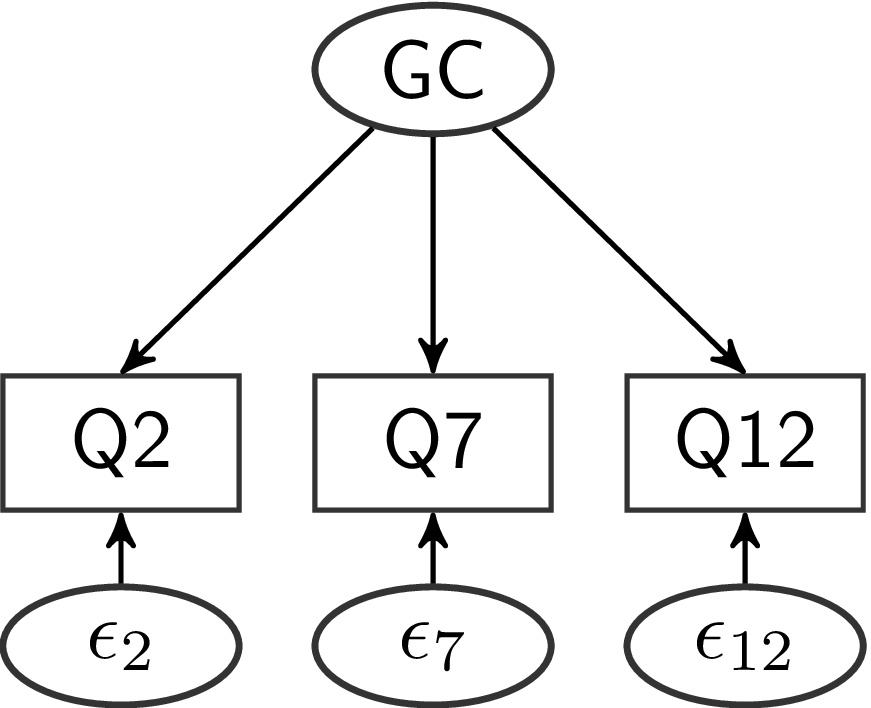
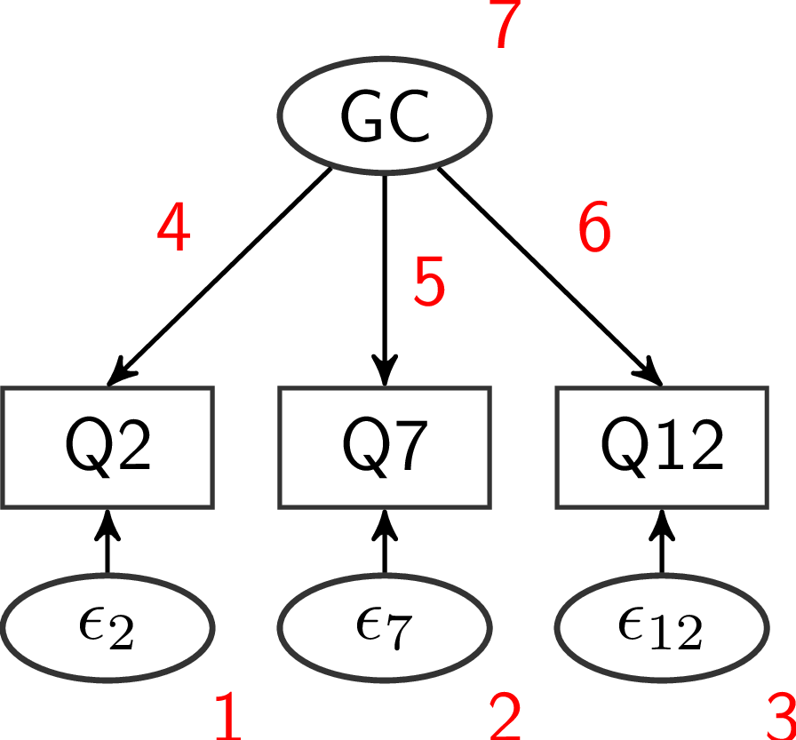
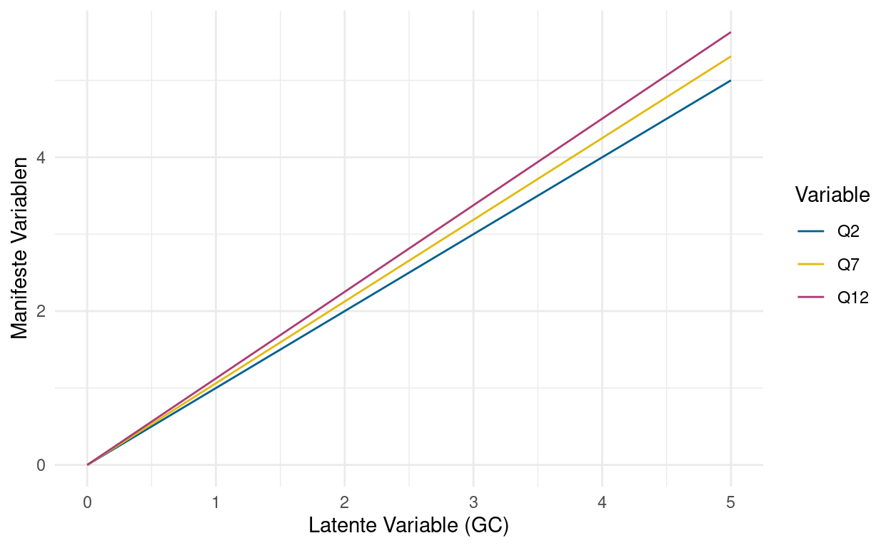
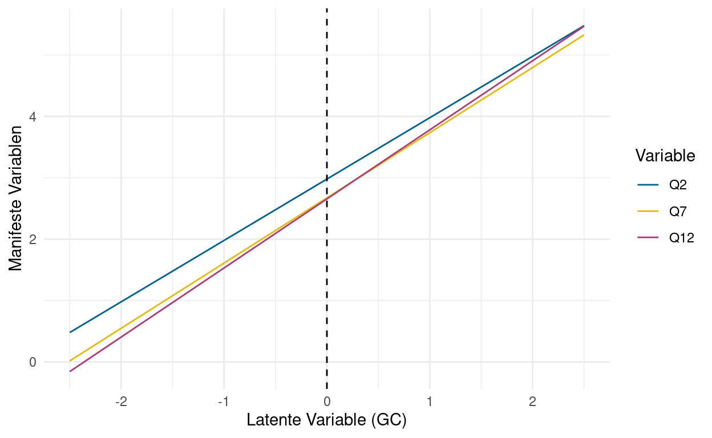
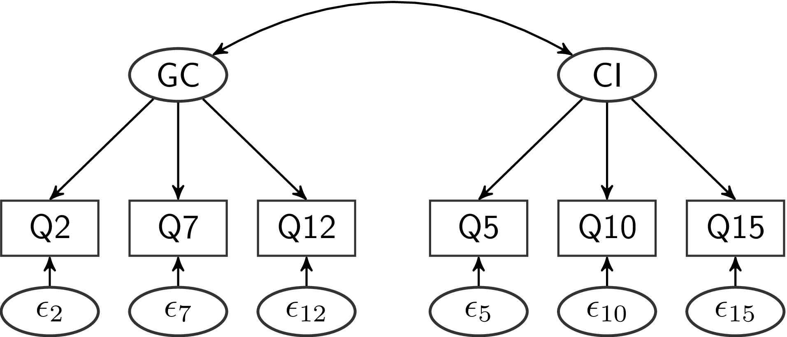
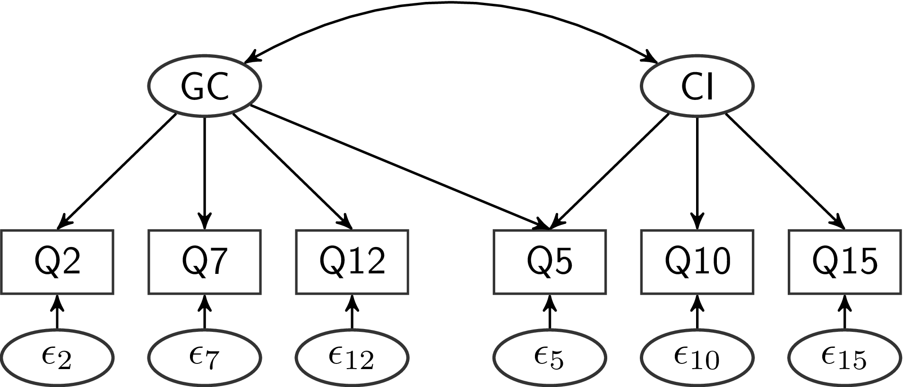
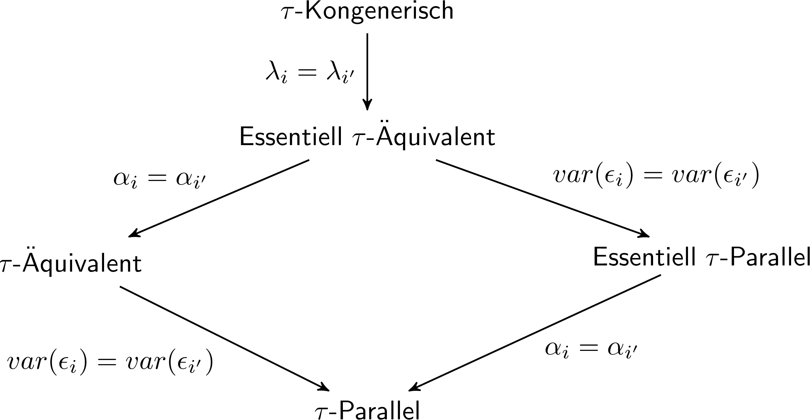
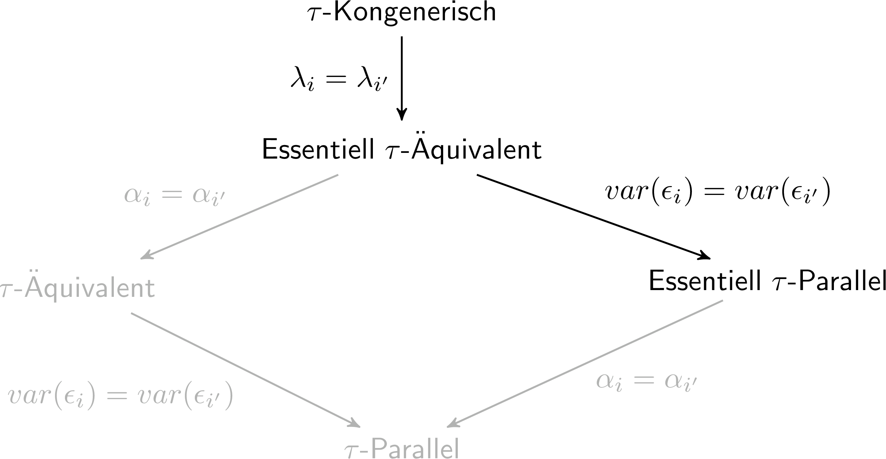

In der letzten Sitzung wurden faktoranalytische Verfahren für Datenexploration behandelt. Die Ergebnisse der EFA sind datengesteuert: welche Items welchen Faktoren zugeordnet werden, wie viele Faktoren genutzt werden, wie stark der Zusammenhang zwischen Item und Faktor ist, das alles sind Dinge, die aus den Daten heraus entschieden werden. In dieser Sitzung betrachten wir das Vorgehen, wenn in der Faktorenanalysen von einem konkreten, theoretisch fundierten Modell ausgegangen wird und dieses anhand empirischer Daten geprüft werden soll. Ganz im Popper’schen Sinn lässt sich nur durch ein solches Vorgehen wissenschaftlich Erkenntnis gewinnen.
Für die Umsetzung der CFA nutzen wir erneut lavaan - gucken Sie gerne noch einmal in die Unterlagen aus der 1. Sitzung um sich zu vergegenwärtigen, wie hier die Modellierung erfolgt. Grob gesagt gehen wir in lavaan in drei Schritten vor:
In der ersten Sitzung hatten wir gesehen, dass in lavaan anhand weniger Begriffe das Pfadmodell in Syntax übersetzt wird, um unser Modell schätzbar zu machen. Diese Begriffe waren
| Bezeichnung | Befehl | Bedeutung |
|---|---|---|
| Regression | ~ |
wird vorhergesagt durch |
| Kovarianz | ~~ |
kovariiert mit |
| Intercept | ~1 |
wird auf 1 regressiert |
| Faktorladung | =~ |
wird gemessen durch |
| Formative Faktoren | <~ |
wird konstruiert durch |
| Schwellenparameter | |t... |
Schwelle Nummer … |
Bisher haben wir nur mit ~, ~1 und ~~ für Regressionen, Intercepts und Residualvarianzen gearbeitet. Heute kommen Faktorladungen dazu.
Wie schon für letzten beiden Sitzungen, können Sie das komplette R-Skript hier herunterladen.
Konkret wird es in dieser Sitzung um die Faktorstruktur verschwörungstheoretischer Überzeugungen gehen. Dafür nutzen wir Daten aus der Erhebung zur Validierung der Generic Conspiracist Beliefs Scale (GCBS; Brotherton, French, & Pickering, 2013). Die Daten finden Sie öffentlich zugänglich auf der Open Psychometrics Website. Natürlich können Sie dort den Fragebogen auch selbst ausfüllen, wenn Sie möchten. Der Fragebogen besteht aus insgesamt 15 Aussagen, die Probanden jeweils von 1 (“definitely not true”) bis 5 (“definitely true”) hinsichtlich ihres Wahrheitsgehalts einschätzen sollen.
| Nr. | Facette | Itemformulierung |
|---|---|---|
| 1 | GM | The government is involved in the murder of innocent citizens and/or well-known public figures, and keeps this a secret |
| 2 | GC | The power held by heads of state is second to that of small unknown groups who really control world politics |
| 3 | EC | Secret organizations communicate with extraterrestrials, but keep this fact from the public |
| 4 | PW | The spread of certain viruses and/or diseases is the result of the deliberate, concealed efforts of some organization |
| 5 | CI | Groups of scientists manipulate, fabricate, or suppress evidence in order to deceive the public |
| 6 | GM | The government permits or perpetrates acts of terrorism on its own soil, disguising its involvement |
| 7 | GC | A small, secret group of people is responsible for making all major world decisions, such as going to war |
| 8 | EC | Evidence of alien contact is being concealed from the public |
| 9 | PW | Technology with mind-control capacities is used on people without their knowledge |
| 10 | CI | New and advanced technology which would harm current industry is being suppressed |
| 11 | GM | The government uses people as patsies to hide its involvement in criminal activity |
| 12 | GC | Certain significant events have been the result of the activity of a small group who secretly manipulate world events |
| 13 | EC | Some UFO sightings and rumors are planned or staged in order to distract the public from real alien contact |
| 14 | PW | Experiments involving new drugs or technologies are routinely carried out on the public without their knowledge or consent |
| 15 | CI | A lot of important information is deliberately concealed from the public out of self-interest |
Die 15 Aussagen können auf theoretischer Grundlage fünf verschiedenen Facetten zugeordnet werden, die in der Tabelle mit ihren jeweiligen Abkürzungen eingetragen sind:
In dieser Sitzung werden wir untersuchen inwiefern diese theoretische Zuordnung einer empirischen Prüfung standhält.
Zunächst können wir den Datensatz laden und ein bisschen genauer betrachten. Wir haben den Datensatz in diesem Paket integriert, sodass Sie ihn über die data-Funktion aufrufen können:
data(conspiracy, package = 'PsyMSc1')Wir können den Datensatz einfach direkt aufrufen um uns einen Überblick zu verschaffen:
conspiracyDer Datensatz ist allerdings etwas groß um so einen wirklich guten Überblick zu erhalten. Im Folgenden R-Abschnitt können Sie die üblichen Funktionen nutzen, um ein paar generelle Eigenschaften des Datensatzes in Erfahrung zu bringen - z.B. generelle Struktur, Namen der Variablen, Anzahl der Personen. Falls Sie ein paar Vorschläge bezüglich der Funktionen benötigen, nutzen Sie einfach den Hints Button!
# Allgemeine Struktur des Datensatzes
str(conspiracy)# Namen aller Variable im Datensatz
names(conspiracy)# Anzahl der Zeilen (Personen) und Spalten (Variablen)
nrow(conspiracy)
ncol(conspiracy)# Die ersten 6 Zeilen ansehen
head(conspiracy)In der Konzeption der verschwörungstheoretischen Überzeugungen nach Brotherton, French und Pickering (2013) wird behauptet, dass die Items 2, 7 und 12 ein gemeinsames Konstrukt - nämlich “Malevolent global conspiracies” - erheben. Hier noch einmal die genaue Formulierung der drei Aussagen:
| Nr. | Itemformulierung |
|---|---|
| 2 | The power held by heads of state is second to that of small unknown groups who really control world politics |
| 7 | A small, secret group of people is responsible for making all major world decisions, such as going to war |
| 12 | Certain significant events have been the result of the activity of a small group who secretly manipulate world events |
Es wird also behauptet, dass es eine grundlegende Eigenschaft von Personen gibt, die das Ausmaß bestimmt in dem Personen diese Aussagen als wahr einschätzen. Mithilfe der CFA können wir versuchen, diese Behauptung zu prüfen.
Als Pfadmodell dargestellt, sieht das zunächst so aus:

Wie wir es in der ersten Sitzung für die Regression gesehen haben, können wir dieses Pfaddiagramm in lavaan Modellsyntax übersetzen. Zunächst haben wir eine latente Variable, die wir nach Belieben benennen können. Weil es sich sinnvoll anbietet, nenne ich sie hier GC für “global conspiracy”. Diese latente Variable lädt auf drei manifeste Variablen. Bei diesen Variablen habe ich nicht die gleichen Freiheiten in der Benennung, weil es sich hier um manifeste Variablen handelt, die im Datensatz bereits existieren. Daher muss ich hier die auch die Namen verwenden, die im Datensatz für die Variablen genutzt werden. Mit dem =~ wird die Beziehung zwischen einer latenten Variable (links) und beliebig vielen manifesten Variablen (rechts) dargestellt. Diese Beziehung wird allgemein als Faktorladung bezeichnet. Mehrere manifeste Variablen, die der gleichen latenten Variable zugeordnet werden, können mit einem + verbunden werden. Für die Faktorladungen sieht der Modellsyntax-Abschnitt also so aus:
'GC =~ Q2 + Q7 + Q12'Wie schon in der Sitzung zur Regression müssen wir außerdem explizit Residualvarianzen anfordern, weil das Modell sonst behaupten würde, dass die latente Variable eine Varianzaufklärung von 100% an unseren manifesten Variablen leistet. Obwohl das zwar außerordentlich schön für die Entwickler des Fragebogens wäre, wenn dem so wäre, ist beinahe jede manifeste Variable in der psychologischen Forschung mit einem gewissen Maß an Messfehler behaftet. Dieser wird in der CFA als Residualvarianz abgebildet. Daher erweitert sich unser Modell um die folgenden drei Zeilen:
'# Faktorladungen
GC =~ Q2 + Q7 + Q12
# Residualvarianzen
Q2 ~~ Q2
Q7 ~~ Q7
Q12 ~~ Q12'Um das Modell ein wenig zu gliedern, habe ich außerdem mit dem # Kommentare in die Modellsyntax eingefügt, die die einzelnen Abschnitte voneinander abgrenzen. Auch dieses Modell ist noch nicht ganz vollständig. Weil die Varianz der latenten Variable GC nicht explizit angesprochen wird, wird - wie schon bei den Residuen - per Voreinstellung davon ausgegangen, dass diese Varianz 0 ist. Um Varianz auf der latenten Variable zuzulassen, müssen wir also auch diese explizit in das Modell aufnehmen:
'# Faktorladungen
GC =~ Q2 + Q7 + Q12
# Residualvarianzen
Q2 ~~ Q2
Q7 ~~ Q7
Q12 ~~ Q12
# Latente Varianz
GC ~~ GC'Dieses Modell müssen wir erneut einem Objekt zuweisen, damit wir es gleich in der lavaan-Funktion ansprechen können. In einer glorreichen Demonstration meines Einfallsreichtums, habe ich dieses Objekt mod1 benannt - Modell 1.
mod1 <- '# Faktorladungen
GC =~ Q2 + Q7 + Q12
# Residualvarianzen
Q2 ~~ Q2
Q7 ~~ Q7
Q12 ~~ Q12
# Latente Varianz
GC ~~ GC'Sobald wir das Modell erstellt haben folgen alle weiteren Schritte dem gleichen Prinzip, das wir in der ersten Sitzung für Regressionen gesehen haben. Zunächst wenden wir das Modell mit dem lavaan-Befehl auf den Datensatz an. Dieser Datensatz muss dabei alle Variablen enthalten, die wir als manifeste Variablen in unserem Modell angesprochen haben.
fit1 <- lavaan(mod1, conspiracy)## Warning in lav_model_vcov(lavmodel = lavmodel, lavsamplestats = lavsamplestats, : lavaan WARNING:
## Could not compute standard errors! The information matrix could
## not be inverted. This may be a symptom that the model is not
## identified.Die entstehende Warnung stellt ein ernstzunehmendes Problem dar und wird Ihnen wahrscheinlich häufiger begegnen, wenn Sie Dinge mit lavaan ausprobieren. Die Warnung gibt Ihnen zunächst darüber Auskunft wo das Problem aufgetreten ist - in diesem Fall in einer lavaan-internen Funktion namens lav_model_vcov - was aber nicht wirklich von Relevanz ist. Viel wichtiger sind die drei Informationen, die im Text der Warnmeldung enthalten sind:
Could not compute standard errors! Es konnten keine Standardfehler bestimmt werden, was bedeutet, dass Sie keinerlei Inferenzstatistik betreiben können.The information matrix could not be inverted. Der technische Grund, aus dem keine Standardfehler bestimmt werden konnten.This may be a symptom that the model is not identified. Die wahrscheinliche Ursache, an der Sie ansetzen sollten um dieses Problem zu beheben.Wir können uns die entstandenen Ergebnisse angucken, um herauszufinden worin genau das Problem liegen könnte:
summary(fit1)## lavaan 0.6-6 ended normally after 17 iterations
##
## Estimator ML
## Optimization method NLMINB
## Number of free parameters 7
##
## Used Total
## Number of observations 2465 2495
##
## Model Test User Model:
##
## Test statistic NA
## Degrees of freedom -1
## P-value (Unknown) NA
##
## Parameter Estimates:
##
## Standard errors Standard
## Information Expected
## Information saturated (h1) model Structured
##
## Latent Variables:
## Estimate Std.Err z-value P(>|z|)
## GC =~
## Q2 1.116 NA
## Q7 1.186 NA
## Q12 1.256 NA
##
## Variances:
## Estimate Std.Err z-value P(>|z|)
## .Q2 0.752 NA
## .Q7 0.636 NA
## .Q12 0.416 NA
## GC 1.157 NADie folgende Zeile des Outputs zeigt uns, dass lavaan mit seiner Einschätzung vollkommen Recht hatte:
## [...]
## Degrees of freedom -1
## [...]In diesem Fall sind die Freiheitsgrade negativ - das Modell ist also global unteridentifiziert. Bevor Sie jetzt auf den Continue Knopf drücken um herauszufinden, wie man dieses Problem behebt, überlegen Sie kurz anhand Ihres Wissens aus dem Theorie-Teil was genau das Problem sein könnte und wie Sie es beheben würden, wenn die Sitzung hier einfach vorbei wäre.
Sie wissen inzwischen bestimmt, wo sich das Problem in diesem Fall verbirgt. Aber haben Sie trotzdem etwas Geduld - wir werden uns hier ein generelles Vorgehen in lavaan ansehen, mit dem man solche Probleme auch in komplizierteren Situationen lösen kann.
Zunächst wissen Sie aus der Theorie-Sitzung, dass die Anzahl bekannter Informationen sich mit folgender Gleichung berechnen lässt:
\(n_{info} = \frac{p(p + 1)}{2}\)
wobei \(p\) die Anzahl von manifesten Variablen im Modell ist. In unserem Fall also
3 * (3 + 1) / 2## [1] 6Wir können uns auch genau angucken, welche 6 Informationen wir haben, indem wir uns die Kovarianzmatrix aus unseren Daten (sample statistics) ansehen:
inspect(fit1, 'sampstat')## $cov
## Q2 Q7 Q12
## Q2 2.193
## Q7 1.530 2.262
## Q12 1.621 1.722 2.240Hier können wir einfach durchzählen:
## $cov
## Q2 Q7 Q12
## Q2 1
## Q7 2 4
## Q12 3 5 6Die zu schätzenden Parameter (\(n_{par}\)) können wir im Pfaddiagramm abzählen:

Wenn wir uns nicht damit abmühen möchten die Parameter selbst zu zählen, können wir die Anzahl natürlich auch einfach von lavaan bekommen:
inspect(fit1, 'npar')## [1] 7Welche Parameter das genau sind, die hier geschätzt werden, können wir auch mit inspect erfahren:
inspect(fit1, 'free')## $lambda
## GC
## Q2 1
## Q7 2
## Q12 3
##
## $theta
## Q2 Q7 Q12
## Q2 4
## Q7 0 5
## Q12 0 0 6
##
## $psi
## GC
## GC 7Hier sehen wir, wie in lavaan die Modell Matrizen dargestellt werden:
$lambda: die Matrix der Faktorladungen (\(\Lambda\))$theta: die Residualkovarianzmatrix (\(\Theta\))$psi: die latente Kovarianzmatrix (\(\Psi\))Das Ergebnis von inspect ist hier eine Liste dieser drei Matrizen. Wenn wir diese Liste in einem Objekt ablegen, können wir die Matrizen mit dem $ auch einzeln inspizieren:
free <- inspect(fit1, 'free')
free$theta## Q2 Q7 Q12
## Q2 4
## Q7 0 5
## Q12 0 0 6In theta ist also die Residualvarianz von Q7 der insgesamt 5. Parameter des Modells.
Im Theorie-Abschnitt haben Sie gehört, dass in Modellen mit latenten Variablen immer entweder eine Faktorladung oder die latente Varianz fixiert werden muss, um der latenten Variable eine Skala zu geben. Entweder wird eine Faktorladung auf 1 gesetzt um so die Skala der manifesten Variable auf die latente Variable anzuwenden, oder die latente Varianz wird auf 1 fixiert, um die latente Variable in \(z\)-Werten interpretierbar zu machen. In der EFA ist diese zweite Variante extrem verbreitet. In der CFA wird Ihnen die erste Variante häufiger begegnen.
Um die erste Faktorladung auf 1 zu fixieren, können wir das lavaan-Modell wie folgt ergänzen:
mod1 <- '# Faktorladungen
GC =~ 1*Q2 + Q7 + Q12
# Residualvarianzen
Q2 ~~ Q2
Q7 ~~ Q7
Q12 ~~ Q12
# Latente Varianz
GC ~~ GC'Mit 1* legen wir den konkreten Wert der Faktorladung fest. Zum Beispiel mit 2* könnten wir diese Ladung auf den Wert 2 fixieren. Das gleiche Prinzip gilt in lavaan für alle Modellparameter. Probieren Sie unten aus, das Modell so zu schreiben, dass die Faktorladungen frei sind, aber die latente Varianz auf 1 fixiert ist!
mod1b <- '# Faktorladungen
GC =~ Q2 + Q7 + Q12
# Residualvarianzen
Q2 ~~ Q2
Q7 ~~ Q7
Q12 ~~ Q12
# Latente Varianz
GC ~~ GC'
mod1btmp <- '# Faktorladungen
GC =~ Q2 + Q7 + Q12
# Residualvarianzen
Q2 ~~ Q2
Q7 ~~ Q7
Q12 ~~ Q12
# Latente Varianz
GC ~~ 1*GC'
grade_result(
fail_if(~ (!grepl('~~1*Q', gsub(' ', '', .result))), 'Die Residualvarianz brauchen Sie nicht zu fixieren. Diese können ruhig geschätzt werden.'),
fail_if(~ (!grepl('=~1*Q', gsub(' ', '', .result))), 'Wenn Sie die latente Varianz fixieren brauchen Sie nicht gleichzeitig die Faktorladung zu fixieren. Eins von beiden ist ausreichend.'),
pass_if(~ identical(gsub(' ', '', .result), gsub(' ', '', tmp))),
correct = 'Sehr gut! In diesem Fall wird die latente Variable z-standardisiert.',
incorrect = 'Leider falsch.',
glue_correct = '{.correct}',
glue_incorrect = '{.incorrect} {.message}')Das Modell mit der eingeführten Restriktion, dass die 1. Faktorladung auf 1 fixiert ist (\(\lambda_{2} = 1\)) sollte nun nur noch 6 zu schätzende Parameter enthalten. Demzufolge müsste die Warnmeldung, die beim letzten Versuch entstanden ist, verschwinden:
fit1 <- lavaan(mod1, conspiracy)So weit, so gut. Wenn wir uns wieder angucken, welche Parameter geschätzt werden mussten, sehen wir
inspect(fit1, 'free')## $lambda
## GC
## Q2 0
## Q7 1
## Q12 2
##
## $theta
## Q2 Q7 Q12
## Q2 3
## Q7 0 4
## Q12 0 0 5
##
## $psi
## GC
## GC 6dass in $lambda nur noch die Ladungen von Q7 und Q12 geschätzt werden müssen. Die Ladung von Q2 ist kein Paramater des Modells mehr, weil wir diese ja auf einen Wert festgelegt haben.
Jetzt können wir uns noch einmal die Ergebnisse angucken:
summary(fit1)## lavaan 0.6-6 ended normally after 19 iterations
##
## Estimator ML
## Optimization method NLMINB
## Number of free parameters 6
##
## Used Total
## Number of observations 2465 2495
##
## Model Test User Model:
##
## Test statistic 0.000
## Degrees of freedom 0
##
## Parameter Estimates:
##
## Standard errors Standard
## Information Expected
## Information saturated (h1) model Structured
##
## Latent Variables:
## Estimate Std.Err z-value P(>|z|)
## GC =~
## Q2 1.000
## Q7 1.062 0.023 46.881 0.000
## Q12 1.126 0.023 48.602 0.000
##
## Variances:
## Estimate Std.Err z-value P(>|z|)
## .Q2 0.752 0.028 26.494 0.000
## .Q7 0.636 0.028 22.913 0.000
## .Q12 0.416 0.026 15.743 0.000
## GC 1.440 0.062 23.401 0.000Wir sehen, dass wir jetzt für alle Parameter Standardfehler erhalten und
## [...]
## Degrees of freedom 0
## [...]das Modell jetzt 0 Freiheitsgrade hat. Es handelt sich also um ein gerade identifiziertes oder auch saturiertes Modell. Modelle mit \(df = 0\) enthalten keine Prüfbare Vereinfachung der empirischen Datenlage. Die einzelnen Parameter sind lediglich Umformulierungen von Informationen, die wir schon in den empirischen Daten vorliegen haben. Bei Eid, Gollwitzer & Schmitt (2017) finden Sie auf S. 866 - 867 eine detaillierte Darstellung, wie Sie die Parameter dieses Modells auch händisch bestimmen können.
Welche inhaltlichen Aussagen erlaubt uns diese Umformulierung jetzt? Gucken wir uns mal die Faktorladungen an:
## [...]
## Latent Variables:
## Estimate Std.Err z-value P(>|z|)
## GC =~
## Q2 1.000
## Q7 1.062 0.023 46.881 0.000
## Q12 1.126 0.023 48.602 0.000
## [...]In der Ergebnisaufbereitung von lavaan hat sich gegenüber dem Regressionsmodell aus Sitzung 1 wenig geändert. Die Spalten sind nach wie vor Name der Variable, geschätzter Parameter, Standardfehler, \(z\)-Wert und \(p\)-Wert. Die Faktorladungen sind durch Überschriften gegliedert. In unserem Fall gibt es nur eine latente Variable, weswegen es nur die Überschrift GC =~ gibt. Alle darunter stehenden Ladungen beziehen sich also logischerweise auf Faktorladungen von manifesten Variable zu dieser latenten Variable. Für die Ladung der manifesten Variable Q2 sind die Spalten für den Standardfehler, \(z\)-Wert und \(p\)-Wert leer. Das liegt daran, dass wir diesen Parameter festlegen, es gibt bezüglich seiner Größe also keine Unsicherheit in der Schätzung (die im Standardfehler quantifiziert wird) und demzufolge auch keine Inferenz dazu, ob Sie bedeutsam von 0 verschieden ist. Sie ist per Definition von 0 verschieden, weil wir das - ohne empirische Unsicherheit - so festgelegt haben.
Was bedeuten diese Ladungen aber inhaltlich? Glücklicherweise hält auch für die CFA das beinahe allgemeingültige Mantra der sozialwissenschaftlichen Auswertungsverfahren: “es ist alles nur Regression”. Die Faktorladungen entsprechen hier also dem Regressionsgewicht der manifesten Variable vorhergesagt durch die latente Variable. (Bitte beachten Sie die Richtung! Häufig wird diese Beziehung fälschlicherweise umgekehrt interpretiert - in der klassischen CFA ist aber die latente Variable die unabhängige Variable und die manifesten Variablen sind die abhängigen Variablen.) Ein Bild:

Die Ausprägung der manifesten Variable wird vorhergesagt durch die Ausprägung der latenten Variable - für \(GC = 2\) sagen wir also \(Q2 = 2\) vorher, weil die Faktorladung dieses Items auf 1 fixiert ist (\(\lambda_{2} = 1\)). Für Q7 ist die Ladung allerdings \(\lambda_{7} = 1.062\), sodass die gelbe Regressionsgerade in der Abbildung ein bisschen steiler verläuft.
Das heißt, dass zwei Personen, die sich in der latenten Variable um eine Einheit unterscheiden im Ausmaß der Zustimmung zur Aussage “The power held by heads of state is second to that of small unknown groups who really control world politics” (Q2) ebenfalls um eine Einheit unterscheiden. Bezüglich der Aussage “A small, secret group of people is responsible for making all major world decisions, such as going to war” (Q7) unterscheiden sich die gleichen beiden Personen aber um 1.062 Einheiten. Weil der Unterschied auf dem latenten Konstrukt GC sich also stärker in Q7 manifestiert als in Q2 (gleiche Unterschiede in GC führen zu stärkeren Unterschieden in Q7 als in Q2), spricht man davon, dass Q7 stärker auf der latenten Dimension diskriminiert. Daher wird die Faktorladung häufig als Diskriminationsparameter bezeichnet. Durch die Festlegung von \(\lambda_2 = 1\) sind die “Einheiten” von denen hier gesprochen wird, die Einheiten der Skala, die genutzt wurde um Q2 zu erheben - in unserem Fall also eine 5-Punkt Likert-Skala.
Wie Sie in der Theorie-Sitzung gesehen haben sind die einzelnen Messgleichungen:
\[ \begin{align} Q2 &= \tau_2 + \lambda_2 \cdot GC + \delta_2 \\ Q7 &= \tau_7 + \lambda_7 \cdot GC + \delta_7 \\ Q12 &= \tau_{12} + \lambda_{12} \cdot GC + \delta_{12} \\ \end{align} \]
Das sind letztlich also einfache lineare Gleichungen mit einer unabhängigen Variable - wie einfache Regressionen. Weil unsere Vorhersage aber mit Fehler behaftet ist, ist jede manifeste Variable mit einem Residuum \(\delta\) behaftet, deren Varianzen in der lavaan-Zusammenfassung so dargestellt werden:
## [...]
## Variances:
## Estimate Std.Err z-value P(>|z|)
## .Q2 0.752 0.028 26.494 0.000
## .Q7 0.636 0.028 22.913 0.000
## .Q12 0.416 0.026 15.743 0.000
## GC 1.440 0.062 23.401 0.000Wie schon bei der Regression in Sitzung 1 wird mit dem . vor dem Variablennamen deutlich gemacht, dass diese Variable in irgendeiner Form im Modell eine abhängige Variable ist. Das heißt, dass es sich bei der berichteten Varianz um eine Residualvarianz handelt. Für GC ist das nicht der Fall, weil - wie gerade besprochen - die latente Variable in der CFA die unabhängige Variable ist.
Was bringt uns das Wissen um die latente Varianz und die Residualvarianzen inhaltlich? Ein Kernkonzept der klassischen Messtheorie (KTT) ist die Reliabilität, also das Ausmaß in dem unser Instrument wahre Unterschiede zwischen Personen misst. Für unser Modell lässt sie sich einfach ausdrücken, für Q7 z.B.:
\[ rel(Q7) = \frac{\lambda_7^2 var(GC)}{var(Q7)} = \frac{\lambda_7^2 var(GC)}{\lambda_7^2 var(GC) + var(\delta_7)} = 1 - \frac{var(\delta_7)}{\lambda_7^2 var(GC) + var(\delta_7)} \]
Besonders die erste Version der Reliabilitätsbestimmung sieht dem klassischen \(R^2\) einer Regression sehr ähnlich - was daran liegt, dass es das Gleiche ist. Wenn wir also die Reliabilität einer unserer manifesten Variablen bestimmen wollen, können wir entweder händisch die Paramater verrechnen oder uns das \(R^2\) von lavaan ausgeben lassen, so wie wir es in der 1. Sitzung für die Regression gemacht haben:
inspect(fit1, 'rsquare')## Q2 Q7 Q12
## 0.657 0.719 0.814Weil \(R^2\) und Reliabilitäten in vielen Fällen von Interesse sind, können wir auch die Modellzusammenfassung um diesen Abschnitt erweitern, indem wir in der summary-Funktion das Zusatzargument rsq auf TRUE setzen. Dann erhalten wir am Ende der Modellzusammenfassung die \(R^2\)-Schätzungen:
summary(fit1, rsq = TRUE)## [...]
## R-Square:
## Estimate
## Q2 0.657
## Q7 0.719
## Q12 0.814In diesem Fall ist die Reliabilität von Q7 also 0.719. Das heißt, dass ca. 72% der interindividuellen Unterschiede, die wir bezüglich der Zustimmung zur Aussage von Q7 beobachten können auf wahre Unterschiede in der latenten Dimension malevolent global conspiracies attribuiert werden können. Die verbleibenden 28% gehen auf Messfehler zurück. Was uns die CFA hier über das Ausmaß der klassischen Reliabilitätsbestimmung, wie Sie sie wahrscheinlich im Bachelorstudium gelernt haben, ermöglicht ist, dass wir die Reliabilität jedes einzelnen Items eines Fragebogens bestimmen können, nicht nur die der gesamten Skala.
Wie Ihnen vielleicht aufgefallen ist, war in unseren gesammelten Ergebnissen bisher nirgends die Rede von Intercepts oder Mittelwerten. Das liegt daran, dass wir auch diese explizit in die Modellsyntax aufnehmen müssten. Üblicherweise werden in der CFA die Intercepts aller manifesten Variablen als Parameter aufgenommen, der Mittelwert der latenten Variable aber auf 0 fixiert. Dadurch handelt es sich bei der latenten Variable in der CFA im Normalfall um eine zentrierte Variable.
Unten sehen Sie das Modell mod1 mit dem wir bisher gerechnet haben. Probieren Sie dieses Modell so zu erweitern, dass es auch die Intercepts der manifesten Variablen enthält und legen Sie es im Objekt mod2 ab! Schätzen Sie das Modell auch direkt und legen Sie die Ergebnisse in fit2 ab und rufen Sie das Objekt anschließen mit fit2 auf um zu prüfen, ob es funktioniert hat! Mit dem Solution Button erhalten Sie die vollständige Lösung.
mod1 <- '
# Faktorladungen
GC =~ 1*Q2 + Q7 + Q12
# Residualvarianzen
Q2 ~~ Q2
Q7 ~~ Q7
Q12 ~~ Q12
# Latente Varianz
GC ~~ GC'
fit2 <- ...# Modellsyntax
# Intercepts werden immer mit ~1 angesprochen
mod2 <- '
# Faktorladungen
GC =~ 1*Q2 + Q7 + Q12
# Residualvarianzen
Q2 ~~ Q2
Q7 ~~ Q7
Q12 ~~ Q12
# Latente Varianz
GC ~~ GC
# Intercepts
Q2 ~ 1
Q7 ~ 1
Q12 ~ 1'
# Modellschätzung
fit2 <- lavaan(mod2, conspiracy)
# Überprüfen
fit2Wenn Sie alles richtig gemacht haben, sollte das Ergebnis der CFA mit Mittelwertsstruktur zunächst so aussehen:
fit2## lavaan 0.6-6 ended normally after 19 iterations
##
## Estimator ML
## Optimization method NLMINB
## Number of free parameters 9
##
## Used Total
## Number of observations 2465 2495
##
## Model Test User Model:
##
## Test statistic 0.000
## Degrees of freedom 0Mit dem summary Befehl können wir uns wieder die Modellzusammenfassung ansehen. Im Vergleich zum bisherigen fit1 kommt ein Abschnitt dazu:
summary(fit2)## [...]
## Intercepts:
## Estimate Std.Err z-value P(>|z|)
## .Q2 2.979 0.030 99.880 0.000
## .Q7 2.673 0.030 88.235 0.000
## .Q12 2.656 0.030 88.102 0.000
## GC 0.000
## [...]Wie bei der Regression und bei den Varianzen schon gesehen, markiert der . Variablen, die im Modell abhängige Variablen sind, sodass der dargestellte Wert als Intercept (sprich bedingter Mittelwert) und nicht als Mittelwert interpretiert werden sollte. Wie bei Intercepts in Regressionen auch, ist das hier dargestellte Intercept von Q7 der Wert, den wir erwarten, wenn eine Person auf dem Prädiktor (GC) den Wert 0 hat. Durch die Festlegung des Mittelwerts von GC auf 0 bedeutet das Intercept also, dass es der erwartete Wert einer durchschnittlichen Person ist. Genau genommen ist das also lediglich eine sehr umständliche Variante doch den Mittelwert von Q7 zu meinen. Wenn wir die Darstellung als Regression um diese Intercepts erweitern ergibt sich folgendes Bild:

Die gestrichelte Linie stellt den Mittelwert der latenten Variable dar. Der Punkt an dem die jeweilige Regressionsgerade diese Linie schneidet ist also das Intercept. Erneut ist eine berechtigte Frage: “Aber was soll mir das jetzt bringen?” Die Intercepts werden im Rahmen der klassischen Testtheorie als Leichtigkeitsparameter interpretiert. Der Aussage “The power held by heads of state is second to that of small unknown groups who really control world politics” (Q2) weist eine Person mit durchschnittlicher Ausprägung auf der Dimension malevolent global conspiracies einen Wahrheitsgehalt von 2.979 zu (auf einer Skala von 1 bis 5). Die Gleiche, durchschnittliche Person schätzt den Wahrheitsgehalt der Aussage “A small, secret group of people is responsible for making all major world decisions, such as going to war” (Q7) auf einer Skala von 1 bis 5 mit 2.673 ein. Q2 wird also in größerem Ausmaß zugestimmt - die Aussage ist leichter zu bejahen, daher die Bezeichnung als Leichtigkeitsparameter.
Wie wir im letzten Abschnitt gesehen haben, hatte das Modell für die Facette malevolent global conspiracies 0 Freiheitsgrade und war deswegen lediglich eine Umformulierung der empirischen Datenlage. Um uns mit Modellen zu beschäftigen, die prüfbare Behauptungen darstellen können wir zwei Wege beschreiten.
Wir können in das Modell Einschränkungen einführen, die die Beziehung zwischen den drei Items Q2, Q7 und Q12 und der latenten Variable GC präzisieren. Diese Messmodelle der Klassischen Testtheorie werden im Appendix besprochen. Wenn Sie Ihre Kenntnis über die CFA und ihre Umsetzung in lavaan also vertiefen wollen, finden Sie dort eine detaillierte Darstellung der hierarchischen Messmodelle und der Einführung von Paramatergleichsetzungen in lavaan.
Die zweite Möglichkeit um die behauptete Messstruktur des Konstrukts in prüfbare Aussagen zu überführen ist es dieses gegenüber anderen psychologischen Konstrukten und Aussagen explizit abzugrenzen. Wenn die drei Aussagen in Q2, Q7 und Q12 Manifestierungen der Facette malevolent global conspiracies darstellen, sollte sie in einer CFA z.B. von der Facette control of information (Q5, Q10, Q15) klar unterscheidbar sein. Wenn sie das nicht wären, müssten wir die theoretische Konzeption der verschwörungstheoretischen Überzeugungen als fünf-dimensionales Konstrukt revidieren und z.B. mit einer EFA untersuchen, welche Dimensionen sich empirisch unterscheiden lassen. Wie Sie am Titel dieses Abschnitts erkennen konnten, befassen wir uns hier mit diesem Vorgehen.
Im letzten Abschnitt haben wir uns damit abgemüht das Modell in seiner Gänze in der lavaan-Modellsyntax darzustellen. Wie erwähnt gibt es aber einige Dinge, die in der breiten Masse der CFA Modelle in gleicher Weise gehandhabt werden: üblicherweise wird die Faktorladung der 1. manifesten Variable auf 1 fixiert, für alle abhängigen Variablen sollen auch Residualvarianzen geschätzt werden und wenn wir latente Variablen definieren, sollen diese auch Varianz haben. Dieses Verhalten kann in lavaan erzeugt werden, sodass wir uns sparen können alle Elemente im Modell aufzulisten. Dafür können wir ein sparsames Modell definieren und an einen von drei Befehlen weitergeben:
cfa: enthält Voreinstellungen, die in der Anwendung von CFAs üblich sindsem: macht genau das Gleiche wie cfagrowth: enthält Voreinstellungen für Wachstumskurvenmodelle, eine spezielle Form der Modllierung von LängsschnittdatenWarum gibt es cfa und sem? Offiziell sind beide implementiert, weil es in Zukunft passieren könnte, dass unterschiedliche Voreinstellungen für konfirmatorische Faktorenanalysen und Strukturgleichungsmodelle implementiert werden. Derzeit ist das nicht der Fall, sodass beide Funktionen austauschbar verwandt werden können. Ich nutze sie meistens an unterschiedlichen Stellen, um in meinen lavaan-Skripten schnell sehen zu können was an welcher Stelle passiert.
In jedem Fall funktionieren cfa, sem und growth genauso wie der allgemeine lavaan-Befehl mit dem wir bisher gearbeitet haben. Der Unterschied besteht lediglich darin, dass Voreinstellungen gesetzt werden, die den Prozess der Modellierung stark abkürzen. Mit der Hilfefunktion ?cfa können Sie sich ansehen, welche Voreinstellungen vorgenommen werden. Da steht:
The cfa function is a wrapper for the more general lavaan function, using the following default arguments:
int.ov.free = TRUE,int.lv.free = FALSE,auto.fix.first = TRUE(unlessstd.lv = TRUE),auto.fix.single = TRUE,auto.var = TRUE,auto.cov.lv.x = TRUE,auto.efa = TRUE,auto.th = TRUE,auto.delta = TRUE, andauto.cov.y = TRUE.
Eine Übersicht über alle möglichen Einstellung in lavaan finden Sie mit ?lavOptions. Für uns sind folgende Aussagen von zentraler Bedeutung:
auto.fix.first = TRUE: die erste Faktorladung jeder latenten Variable wird automatisch fixiertauto.var = TRUE: die Varianz latenter Variablen und Residualvarianzen manifester Variablen werden automatisch frei geschätztauto.cov.lv.x = TRUE: Kovarianzen zwischen exogenen latenten Variablen werden automatisch frei geschätzt.Das heißt, das alles sind Dinge, die wir in der Modellsyntax nicht mehr explizit ansprechen müssen. Die Syntax des mod1 aus dem letzten Abschnitt verkürzt sich daher auf nur eine Zeile:
mod1_simple <- 'GC =~ Q2 + Q7 + Q12'mod1_simple <- 'GC =~ Q2 + Q7 + Q12'Wenn Sie dieses Modell an cfa weitergeben, entstehen genau die gleichen Ergebnisse, die wir im zweiten Anlauf erzeugt hatten. Probieren Sie es gerne aus um zu prüfen, ob ich Sie anlüge:
fit1_simple <- cfa(mod1_simple, conspiracy)# Ergebniszusammenfassung
summary(fit1_simple)Was hier erneut fehlt ist die Mittelwertsstruktur, die nicht per Voreinstellung mit in das Modell aufgenommen wird. Dieser können wir aber per Argument von cfa anfordern:
fit2_simple <- cfa(mod1_simple, conspiracy,
meanstructure = TRUE)Dann erhalten wir erneut den zusätzlichen Abschnitt mit den Intercepts, den wir im letzten Abschnitt per Hand erzeugt hatten:
mod1_simple <- 'GC =~ Q2 + Q7 + Q12'
fit2_simple <- cfa(mod1_simple, conspiracy,
meanstructure = TRUE)summary(fit2_simple)Diese neu gefundene Leichtigkeit der Modellierung können wir direkt nutzen, um ein zweifaktorielles Modell für die beiden Facetten malevolent global conspiracies und control of information aufzustellen. Zu unseren bisherigen drei Items (Q2, Q7 und Q12) kommen die folgenden drei dazu:
| Nr. | Itemformulierung |
|---|---|
| 5 | Groups of scientists manipulate, fabricate, or suppress evidence in order to deceive the public |
| 10 | New and advanced technology which would harm current industry is being suppressed |
| 15 | A lot of important information is deliberately concealed from the public out of self-interest |
Um die beiden Facetten voneinander abzugrenzen, stellen wir ein Modell mit zwei latenten Variablen auf, welches als Pfaddiagramm so aussieht:

Inhaltlich wird mit diesem Modell behauptet, dass die Zustimmung zu den sechs Aussagen sich auf zwei verschiedene Überzeugungen von Personen zurückführen lässt. Die Erste stellt die Überzeugung dar, dass es eine kleine, elitäre Gruppe von Personen gibt, die das Weltgeschehen im Geheimen steuert. Diese Überzeugung äußert sich in der Zustimmung zu den drei Aussagen in Q2, Q7 und Q12. Die Zweit ist die Überzeugung, dass technologischer und wissenschaftlicher Fortschritt absichtlich verschleiert wird, um die Interessen einiger weniger zu schützen. Diese Überzeugung äußert sich dann in der Zustimmung zu den Aussagen in Q5, Q10 und Q15. Zusätzlich behauptet dieses Modell aber auch, dass sich eine Überzeugung bezüglich malevolent global conspiracies nicht in der Zustimmung zu den Aussagen in Q5, Q10 oder Q15 wiederfinden lässt. Zusammenhänge der Zustimmung zu den Aussagen in Q12 (“Certain significant events have been the result of the activity of a small group who secretly manipulate world events”) und Q10 (“New and advanced technology which would harm current industry is being suppressed”) sollen nur dadurch entstehen, dass die beiden grundlegenden (latenten) Überzeugungen miteinander zusammenhängen können. Diese latente Korrelation wird im Pfadmodell durch den Doppelpfeil kenntlich gemacht.
Um dieses Modell in lavaan zu implementieren brauchen wir nur die folgenden Zeilen:
mod_two <- '
GC =~ Q2 + Q7 + Q12
CI =~ Q5 + Q10 + Q15'Durch die oben besprochenen Voreinstellungen werden die restlichen Modellelemente ergänzt, wenn wir cfa oder sem nutzen, um das Modell zu schätzen.
fit_two <- cfa(mod_two, conspiracy,
meanstructure = TRUE)Nutzen Sie die Befehle, die wir im Abschnitt zum einfaktoriellen Modell kennengelernt haben um sich über die Ergebnisse dieses zweifaktoriellen Modells einen Überblick zu verschaffen!
mod_two <- '
GC =~ Q2 + Q7 + Q12
CI =~ Q5 + Q10 + Q15'
fit_two <- cfa(mod_two, conspiracy,
meanstructure = TRUE)# Allgemeiner Überblick
summary(fit_two)
# Reliabilität der sechs Aussagen
inspect(fit_two, 'rsquare')Die summary enthält nun den neuen Abschnitt Covariances der, wie Sie vermutlich erraten können, Kovarianzen zwischen den latenten Variablen enthält. Versuchen Sie mit inspect die Korrelation zwischen den beiden Faktoren in Erfahrung zu bringen!
# Nutzen Sie die Hilfe um zu sehen, was inspect ausgeben kann!
?inspectsol1 <- inspect(fit_two, 'cor.lv')
sol2 <- inspect(fit_two, 'std')
sol3 <- inspect(fit_two, 'std.lv')
grade_result(
pass_if(~ identical(sol1, .result), 'Auf diesem Weg wird die Korrelationsmatrix der latenten Variablen ausgegeben und Sie haben einen schnellen Überblick. Das ist besonders nützlich, wenn Sie mit vielen latenten Variablen gleichzeitig arbeiten.'),
pass_if(~ identical(sol2, .result), 'Auf diesem Weg werden alle Modellparameter standardisiert und Sie erhalten die Ergebnisse in Matrizenform. Die latenten Korrelationen sind dann in der Matrix $psi enthalten. Faktorladungen in $lambda entsprechen hier der Korrelation zwischen latenter und manifester Variable.'),
pass_if(~ identical(sol3, .result), 'Auf diesem Weg werden die Modellparameter erzeugt, die Sie bekommen hätten, wenn die latenten Varianzen auf 1 fixiert gewesen wären, statt die erste Faktorladung auf 1 zu fixieren. Die Ergebnisse werden hier in Matrizenform ausgegeben. Weil die latenten Variablen dann z-Standardisiert sind, entsprechen die Werte in der Matrix $psi den latenten Korrelationen.'),
correct = 'Sehr gut!',
incorrect = 'Leider falsch. Gucken Sie noch einmal genau in den Abschnitt zu "what" in der Hilfe von inspect.',
glue_correct = '{.correct} {.message}',
glue_incorrect = '{.incorrect}')Bisher haben wir hauptsächlich mit inspect gearbeitet, um uns die Ergebnisse unserer Modelle detailliert anzugucken. In den allermeisten Fällen ist das auch der sinnvollste Ansatz. Trotzdem ist es immer gut auch Alternativen zu kennen. Die erste sinnvolle alternative Darstellungsart von Ergebnissen ist die Parametertabelle, die wir in lavaan über paramaterEstimates anfordern können. Für das zweifaktorielle Modell sieht diese so aus:
parameterEstimates(fit_two)Per Voreinstellung bekommen wir damit einen Datensatz, der 9 Spalten hat und aus so vielen Zeilen besteht, wie unser Modell Parameter hat (in diesem Fall 23). Die ersten drei Spalten (lhs, op, rhs) sind dazu da, den Parameter zu kennzeichnen, der in dieser Zeile dargestellt wird. Dafür gibt op den operator - also die Art des Parameters - an. In Zeile eins steht da ein =~ also eine Faktorladung. lhs steht für left hand side und gibt an, welche Variable links des operators steht - rhs ist dann logischerweise die right hand side. Dadurch, dass hier in drei Spalten des Datensatzes zwischen den Parametern unterschieden wird, können wir sehr einfach und schnell die uns schon bekannten Verfahren nutzen, um die Parameter aus den herauszufiltern, die uns interessieren. Unten wird die Parametertabelle in ein Objekt namens para abgelegt. Probieren Sie mal aus, sich für die Intercepts und Mittelwerte alle Spalten aus dieser Parametertabelle ausgeben zu lassen!
# Parameter in Objekt ablegen
para <- parameterEstimates(fit_two)# Spezifische Elemetne werden in R mit [Zeile, Spalte] ausgewählt
para[1, ] # erste Zeile, alle Spalten
para[, 1] # erste Spalte, alle Zeilen# Das logische "ist gleich" kann genutzt werden um einen Filter-Vektor zu erstellen
letters[1:10] == 'c'# Der lavaan Operator für Mittelwerte und Interceps ist '~1'sol <- para[para$op == '~1', ]
grade_result(
pass_if(~ identical(sol, .result)),
correct = 'Richtig! Dieser Ansatz kann genutzt werden um die Parameter weiter zu verwenden, z.B. in Abbildungen.',
incorrect = 'Leider falsch.',
glue_correct = '{.correct}',
glue_incorrect = '{.incorrect}')Über die Hilfe zu parameterEstimates können wir wieder sehen, welche Argumente diese Funktion entgegennimmt. Ein hilfreiches Argument ist z.B. standardized = TRUE mit dem wir zusätzlich zu den normalen Ergebnissen auch noch die standardisierten Modellergebnisse anfordern können.
Wenn Sie die Aufbereitung von summary eigentlich mögen, aber sich wünschen würden, dass es einfach ein paar zusätzliche Informationen gäbe, können Sie auch die summary um zusätzliche Argumente ergänzen. Wir hatten das vorhin schon für die Varianzaufklärung bzw. Reliabilität gemacht - aber das Prinzip lässt sich auf viele Aspekte der Modellergebnisse erweitern. Folgendes sind ein paar interessante Argumente, um die wir die summary erweitern können:
rsquare = TRUE: Varianzaufklärung bzw. Reliabilitätstandardized = TRUE: Standardisierte Parameterci = TRUE: Konfidenzintervalle um die Parameterschätzerfit.measures = TRUE: Kennwerte zur Modellpassung bzw. -güte.Wenn wir die Ergebniszusammenfassung z.B. um Konfidenzintervalle erweitern, sieht der Abschnitt der Faktorladungen so aus:
summary(fit_two, ci = TRUE)## [...]
## Latent Variables:
## Estimate Std.Err z-value P(>|z|) ci.lower ci.upper
## GC =~
## Q2 1.000 1.000 1.000
## Q7 1.054 0.022 47.592 0.000 1.010 1.097
## Q12 1.116 0.022 50.392 0.000 1.072 1.159
## CI =~
## Q5 1.000 1.000 1.000
## Q10 0.842 0.034 25.135 0.000 0.776 0.908
## Q15 0.692 0.027 25.850 0.000 0.639 0.744
## [...]Probieren Sie gerne noch ein paar andere Möglichkeiten aus!
summary(fit_two)Was genau es mit den Fit-Statistiken auf sich hat gucken wir uns im nächsten Abschnitt an.
Im letzten Abschnitt hatten wir kurz die inhaltliche Modellimplikation besprochen und dabei festgehalten, dass das zwei-Faktormodell die Behauptung aufstellt, dass der Zustimmung zu den Aussagen in Q2, Q7 und Q12 eine gemeinsame latente Variable zugrunde liegt und die Zustimmung zu den Aussagen in Q5, Q10 und Q15 von einer anderen, unterscheidbarer latenten Variable abhängt. Wie haltbar ist diese Aussage? Nach klassischer Popper’scher Vorstellung müssen wir eine Theorie aufstellen (unser Modell) diese mit der Empirie abgleichen (unsere Daten) und dann entscheiden, ob unsere Theorie verworfen werden muss oder beibehalten werden kann. Bei konfirmatorischer Faktorenanalyse und Strukturgleichungsmodellierung wird diese Entscheidung anhand des Model Fits getroffen.
Wie Sie in der inhaltlichen Sitzung bereits erfahren haben, wird die Modellpassung über den Vergleich der modellimplizierten und der empirischen Kovarianzmatrix bestimmt. Wenn die empirische Kovarianzmatrix \(\mathbf{S}\) zu stark von unserer Modellimplikation \(\mathbf{\Sigma(\widehat{\theta})}\) abweicht, muss das Modell verworfen werden. Wie die beiden Matrizen aussehen können wir natürlich über inspect erfahren:
# Empirische Matrix
inspect(fit_two, 'sampstat')$cov## Q2 Q7 Q12 Q5 Q10 Q15
## Q2 2.188
## Q7 1.526 2.258
## Q12 1.619 1.720 2.241
## Q5 1.006 0.998 1.088 2.128
## Q10 0.787 0.812 0.835 0.876 1.929
## Q15 0.661 0.644 0.681 0.731 0.686 1.202# Modellimplizierte Matrix
inspect(fit_two, 'cov.ov')## Q2 Q7 Q12 Q5 Q10 Q15
## Q2 2.188
## Q7 1.534 2.258
## Q12 1.624 1.712 2.241
## Q5 0.933 0.983 1.041 2.128
## Q10 0.785 0.828 0.876 0.911 1.929
## Q15 0.645 0.680 0.720 0.748 0.630 1.202Den meisten Fit-Statistiken liegt die Fitfunktion \(F\) zugrunde. Üblicherweise werden CFAs mit dem maximum likelihood Verfahren geschätzt, sodass diese Fitfunktion als \(F_{ML}[\mathbf{\Sigma(\widehat{\theta})}, \mathbf{S}]\) notiert wird. Wie Sie an der Notation sehen, gehen in diese Fitfunktion die beiden oben aufgeführten Matrizen ein. Ziel der Schätzung ist im Groben, dass die Wahrscheinlichkeit der Daten, gegeben unser Modell, maximiert wird. Um die Multiplikation, die notwendig ist um die Wahrscheinlichkeiten unabhängiger Zufallsereignisse zu bestimmen zu umgehen, wird in der Statstik lieber mit Logarithmen gearbeitet. Diese kann man einfach addieren, sodass das Problem vereinfacht wird ohne es wirklich zu ändern. Der Logarithmus der Likelihood wird dann einfach als LogLikelihood bezeichnet.
Um alle möglichen Fit-Statistiken für ein Modell zu bestimmen, können wir wieder mit inspect arbeiten. Weil hier ein ziemlicher Wust aus Zahlen entsteht, legen wir das Ergebnis erst einmal in einem Objekt ab:
modelfit <- inspect(fit_two, 'fit.measures')Um jetzt z.B. die LogLikelihood aus diesem Objekt zu ziehen, können wir mit diese über eckige Klammern auswählen. Dazu können wir erst einmal gucken, welche Werte in dem Objekt abgespeichert sind:
# Namen der Fitstatistiken
names(modelfit)## [1] "npar" "fmin" "chisq"
## [4] "df" "pvalue" "baseline.chisq"
## [7] "baseline.df" "baseline.pvalue" "cfi"
## [10] "tli" "nnfi" "rfi"
## [13] "nfi" "pnfi" "ifi"
## [16] "rni" "logl" "unrestricted.logl"
## [19] "aic" "bic" "ntotal"
## [22] "bic2" "rmsea" "rmsea.ci.lower"
## [25] "rmsea.ci.upper" "rmsea.pvalue" "rmr"
## [28] "rmr_nomean" "srmr" "srmr_bentler"
## [31] "srmr_bentler_nomean" "crmr" "crmr_nomean"
## [34] "srmr_mplus" "srmr_mplus_nomean" "cn_05"
## [37] "cn_01" "gfi" "agfi"
## [40] "pgfi" "mfi" "ecvi"# LogLikelihood
modelfit['logl']## logl
## -22500.6Weil diese Zahl als solche relativ schlecht interpretierbar ist wurde etliche Möglichkeiten entwickelt um sie in Effektstärken oder in inferenzstatistische Prüfung der Modellpassung zu überführen. In fast allen dieser Maße wird dabei mit einem unrestringierten Referenzmodell verglichen. “Unrestringiert” heißt hier einfach, dass wir keine Einschränkungen in das Modell einführen - etwas dass wir im Abschnitt zur Modellidentifikation schon gesehen haben und als saturiertes oder gerade identifiziertes Modell bezeichnet hatten. Wie dort besprochen sind solche Modell nicht prüfbar, weil sie nur eine Umformulierung der Daten darstellen. Wenn wir so etwas aber als Referenz nutzen um unser Modell damit zu vergleichen kriegen wir eine Vorstellung davon, wie gut unser Modell ist. Wenn Sie die Namen der Werte in modelfit durchgucken, sehen Sie, dass die LogLikelihood des unrestringierten Modells als unrestricted.logl bezeichnet wird:
# LogLikelihood unrestringiertes Modell
modelfit['unrestricted.logl']## unrestricted.logl
## -22483.98Beinahe als sei es dafür gemacht, folgt die doppelte Differenz dieser beiden LogLikelihoods einer uns bekannten Verteilung (der \(\chi^2\)-Verteilung) was uns erlaubt Inferenzstatistik zu betreiben, weil wir bei bekannten Verteilungen Ablehnungsbereiche definieren können. Die Form der \(\chi^2\)-Verteilung hängt, wie z.B. auch die klassische \(t\)-Verteilung von Freiheitsgraden ab. Die Freiheitsgrade, die bestimmen mit welcher Form der \(\chi^2\)-Verteilung wir die Differenz der LogLikelihoods prüfen können entspricht - Erneut beinahe auf magische Weise - genau der Differenz aus gegebenen Informationen und zu schätzenden Parametern des Modells. In modelfit sind diese Freiheitsgrade unter df (degrees of freedom) zu finden:
modelfit['df']## df
## 8Die \(\chi^2\)-Verteilung mit 8 Freiheitsgraden sieht so aus:

Der blau eingefärbte Bereich ist der Ablehnungsbereich bei einem \(\alpha\)-Fehlerniveau von 5%. Der kritische Wert liegt hier bei gerundet 15.51. Wenn die doppelte Differenz der LogLikelihoods des unrestringierten und unseres Modells diesen kritischen Wert überschreitet muss also die Nullhypothese (unser Modell) verworfen werden:
# Empirische Prüfgröße
emp <- 2 * (modelfit['unrestricted.logl'] - modelfit['logl'])
emp## unrestricted.logl
## 33.24343# p-Wert
pchisq(emp, 8, lower.tail = FALSE)## unrestricted.logl
## 5.566811e-05In diesem Fall wird unser Modell also verworfen. Wie Ihnen bestimmt bewusst ist, können wir uns den Prozess der händischen Bestimmung des \(p\)-Wertes in lavaan auch sparen, weil der \(\chi^2\)-Test sowohl in modelfit als auch in der summary direkt mit ausgegeben wird:
# Aus inspect:
modelfit[c('chisq', 'df', 'pvalue')]## chisq df pvalue
## 3.324343e+01 8.000000e+00 5.566811e-05# Aufruf des lavaan Objekts
fit_two## lavaan 0.6-6 ended normally after 32 iterations
##
## Estimator ML
## Optimization method NLMINB
## Number of free parameters 19
##
## Used Total
## Number of observations 2456 2495
##
## Model Test User Model:
##
## Test statistic 33.243
## Degrees of freedom 8
## P-value (Chi-square) 0.000Wir haben uns also leider nicht verrechnet, dieses Modell wird verworfen.
Wie jeder inferenzstatistischer Test ist auch bei der \(\chi^2\)-Modelltest von der Stichprobengröße abhängig. Komplexe Modelle, die an kleinen Stichproben geprüft werden müssen nicht verworfen werden, einfache Modelle, die an riesigen Stichproben ausprobiert werden, werden auch bei sehr kleinen Diskrepanzen zwischen Annahme und Realität verworfen. Weil prinzipiell nicht belohnt werden soll so wenige Informationen aus der Empirie heranzuziehen wie möglich, gibt es diverse Gütekriterien mit denen versucht wird die Beurteilung eines Modells von der Größe der Stichprobe unabhängig zu machen.
Die bekanntesten Gütekriterien sind der RMSEA (root mean square error of approximation) und der SRMR (standardized root mean square residual). Der RMSEA stellt ist eine Skalierung von \(F_{ML}\) anhand der Stichprobengröße welcher nur Werte von 0 oder größer annehmen kann. Der SRMR hingegen ist eine standardisierte Summe der Differenzen zwischen den beiden Matrizen \(\mathbf{S}\) und \(\mathbf{\Sigma(\widehat{\theta})}\), hängt also nicht direkt von \(F_{ML}\) ab. Das hat den Vorteil, dass der SRMR auch bei anderen Schätzverfahren zum Einsatz kommen kann und trotzdem über verschiedene Situationen hinweg vergleichbar bleibt. Allerdings haben Studien gezeigt, dass der RMSEA eine höhere Trennschärfe hat um zwischen “guten” und “schlechten” Modellen zu unterscheiden. Für beide gilt: je höher der Werte, desto schlechter die Modellpassung. Auch diese beiden Kriterien sind in modelfit enthalten:
modelfit[c('rmsea', 'srmr')]## rmsea srmr
## 0.03584388 0.01364878Für beide wird häufig das Kriterium von \(< .05\) als Daumenregel für gute Modellpassung angenommen. Deskriptiv scheint unser Modell anhand dieser Regeln also sehr gut zu sein.
Als relative Gütekriterien haben Sie in der Theorie-Sitzung GFI, TLI und CFI kennengelernt. Allen drei ist gemeinsam, dass Sie als Vergleichsmodell nicht ein saturiertes bzw. unrestringiertes Modell nutzen, sondern das genaue Gegenteil: das Unabhängigkeitsmodell in dem alle Korrelationen der beobachteten Variablen auf 0 gesetzt werden. Statt also unser postuliertes Modell mit optimaler Passung zu vergleichen und uns nur unsere Fehler vorzuhalten, betrachten diese Kriterien das schlechtest mögliche Modell und geben eine Aussage darüber wie viel besser unser Modell ist. Suchen Sie sich die drei Fitkriterien aus modelfit heraus und entscheiden Sie, ob Sie das Modell anhand dieser Kriterien verwerfen würden!
mod_two <- '
GC =~ Q2 + Q7 + Q12
CI =~ Q5 + Q10 + Q15'
fit_two <- cfa(mod_two, conspiracy,
meanstructure = TRUE)
modelfit <- inspect(fit_two, 'fit.measures')# Namen aller Fitstatistiken im Objekt
names(modelfit)Die oben genannten Fitkriterien werden häufig anhand von Daumenregeln beurteilt. Wie bei allen Daumenregeln gilt auch bei diesen, dass sie nicht uneingeschränkt auf alle Situationen anwendbar sind und es meistens zu genaueren Aussagen führt, sich eine spezifische Situation anzugucken. In anderen Worten, wie für die Effektstärkemaße wie Cohens \(d\) und \(R^2\) gilt auch beim Modelfit, dass Sie die Grenzen aus den Daumenregeln nur dann nutzen sollten, wenn Sie hinsichtlich Ihres Forschungsgegenstandes komplett ahnungslos sind.
Eine Möglichkeit ist es für eine spezifische Situation einfach spezifische Cut-Off Werte für die Fitstatistiken zu generieren. Die gängigen Cut-Off Werte wurden in Simulationsstudien ermittelt, die bestimmte Konstellationen bezüglich Modelltypen und -komplexität sowie Stichprobengröße machen. Wenn wir genau so eine Simulationsstudie für unsere spezifische Situation durchführen, erhalten wir auch für unsere Situation angepasst Cut-Off Kriterien. Damit wir die Simulation nicht selbst schreiben müssen, können wir einfach die ezCutoffs Funktion aus dem gleichnamigen Paket nutzen:
library(ezCutoffs)
cutoff <- ezCutoffs(mod_two, conspiracy)## Data Generation
##
## |==================================================| 100% elapsed = 13s ~ 0s
##
## Model Fitting
##
## |==================================================| 100% elapsed = 15s ~ 0sDie Funktion nimmt ein paar Argumente entgegen:
model: das Modell, für das wir Cut-Offs generieren möchtendata: Falls wir schon Daten haben, können wir sie hier angeben um einen einfachen Vergleich zwischen empirischen Werten und Cut-Off in einer Tabelle zu habenn_obs: Falls wir noch keine Daten haben, können wir hier angeben, wie groß unsere Stichproben sein sollDas Durchführen dauert ein paar Sekunden, weil per Voreinstellung nun 1000 neue Datensätze erzeugt werden auf die unser Modell dann auch 1000 mal angewandt werden muss. Darüber hinaus sei gesagt das, weil es sich hier um einen Zufallsprozess handelt, die Ergebnisse, die Sie erzeugen, wenn Sie die Analyse auf Ihrem Rechner durchführen nicht 100%ig deckungsgleich mit denen sein wird, die sie hier sehen.
Um uns die neu entstandenen Cut-Off Werte anzusehen, können wir einfach das Objekt aufrufen:
cutoff## Empirical fit Cutoff (alpha = 0.05)
## chisq 33.24343262 15.37106806
## cfi 0.99621179 0.99889238
## tli 0.99289710 0.99792320
## rmsea 0.03584388 0.01936895
## srmr 0.01547626 0.00940301Wir sehen hier, dass die Cut-Off Werte, die für unsere Situation erzeugt wurden sehr viel restriktiver sind, als die generellen Leitlinien. Für den RMSEA ergibt sich ein Cut-Off von ca. 0.02, statt der üblichen 0.05, für den SRMR sogar 0.01. Anhand dieser spezifischen Cut-Off Werte muss unser Modell abgelehnt werden.
Die letzten beiden Abschnitte haben uns nur gezeigt, dass unser Modell nicht passt aber noch keine konkrete Aussage über das Warum zugelassen. Wenn wir ganz an den Anfang des Abschnitts zurück denken, dann hatten wir dort die beiden Kovarianzmatrizen gesehen, in denen sich die einzelnen Elemente mitunter ein wenig unterscheiden. lavaan kann uns die Differenz der beiden Matrizen natürlich auch direkt geben, indem wir die residuals der Kovarianzmatrix ($cov) inspizieren:
inspect(fit_two, 'residuals')$cov## Q2 Q7 Q12 Q5 Q10 Q15
## Q2 0.000
## Q7 -0.008 0.000
## Q12 -0.005 0.008 0.000
## Q5 0.073 0.014 0.047 0.000
## Q10 0.001 -0.016 -0.041 -0.035 0.000
## Q15 0.016 -0.036 -0.038 -0.017 0.056 0.000Leider haben Varianzen und Kovarianzen die ungünstige Eigenschaft, dass Sie keine leicht interpretierbare Skala haben. Wie immer hilft dann die Standardisierung. Diese können wir mit dem residuals-Befehl anfordern:
residuals(fit_two, 'standardized')$cov## Q2 Q7 Q12 Q5 Q10 Q15
## Q2 0.000
## Q7 -1.356 0.000
## Q12 -1.301 2.764 0.000
## Q5 3.629 0.790 3.148 0.000
## Q10 0.058 -0.784 -2.426 -2.791 0.000
## Q15 0.951 -2.373 -3.056 -1.898 4.393 0.000Die einzelnen Einträge können wir jetzt quasi als \(z\)-Werte interpretieren: wenn ein Wert vom Betrag also größer als 1.96 ist, ist der Unterschied zwischen Modellimplikation und Empirie an dieser Stelle auf einem \(\alpha\)-Fehlerniveau von 5% statistisch bedeutsam. Runden wir - weil wir mehrere Elemente gleichzeitig betrachten - mal auf 2 auf.
Um jetzt besser interpretieren zu können, was uns diese Abweichungen sagen, hilft es die Matrix in vier grobe Teile aufzuteilen:
Dazu legen die Matrix am besten in einem Objekt ab und gucken uns die Teile einzeln an:
# Als Objekt anlegen
resi <- residuals(fit_two, 'standardized')$cov
# Varianzen in der Diagonale
diag(resi)## Q2 Q7 Q12 Q5 Q10
## 2.523304e-08 4.260729e-08 4.338447e-08 8.158212e-10 -8.168390e-08
## Q15
## -9.348543e-09Die Varianzen können durch das Modell also beinahe perfekt repliziert werden. Ein wenig anders sieht es z.B. bei den Kovarianzen zwischen den Items zu malevolent global conspiracies aus:
resi[1:3, 1:3]## Q2 Q7 Q12
## Q2 2.523304e-08 -1.355963e+00 -1.300967e+00
## Q7 -1.355963e+00 4.260729e-08 2.763595e+00
## Q12 -1.300967e+00 2.763595e+00 4.338447e-08Hier ist die empirische Kovarianz deutlich größer als die Modellimplizierte. Was bedeutet das? Unser Modell behauptet, dass die Kovarianz zwischen Q7 und Q12 einfach die durch die Faktorladungen gewichtete Varianz der latenten Variable ist: \(cov(Q7, Q12) = \lambda_7 \cdot \lambda_{12} \cdot var(GC)\). Das gilt für alle Kovarianzen zwischen den Items Q2, Q7 und Q12. Wenn diese Erwartung nicht der empirischen Beobachtung entspricht lässt sich das in etwa so interpretieren, dass die Items Q7 und Q12 mehr untereinander gemeinsam haben, als sie mit dem Item Q2 gemeinsam haben. Wenn wir uns die Formulierungen der Aussagen noch einmal vor Augen führen können wir versuchen einen inhaltlichen Grund für dieses Problem zu finden.
Probieren Sie es doch am Besten selbst mal mit den Items aus, die als Manifestationen der latenten Variable control of information dargestellt werden. An welchen Stellen springt Ihnen hier Misfit ins Auge? Wenn Sie die Itemformulierungen betrachten - woran könnte das inhaltlich liegen?
mod_two <- '
GC =~ Q2 + Q7 + Q12
CI =~ Q5 + Q10 + Q15'
fit_two <- cfa(mod_two, conspiracy,
meanstructure = TRUE)
resi <- residuals(fit_two, 'standardized')$cov# Die Varianzen und Kovarianzen zu CI-Items extrahieren:
resi[4:6, 4:6]# Logische Matrix, ob etwas vom Betrag > 2 ist
abs(resi[4:6, 4:6] > 2)Für ein zweifaktorielles Modell wahrscheinlich relevanter ist der letzte Teil: die Kovarianzen zwischen Items, die nicht zum gleichen Faktor gehören. In der CFA, wie wir sie hier aufgebaut haben, wir impliziert, dass Item Q2 und Item Q5 nur deswegen zusammenhängen, weil es einen Zusammenhang zwischen den grundlegenden Überzeugungen malevolent global conspiracies und control of information gibt. Item Q5 fällt allerdings direkt zwei mal negativ auf:
resi[4:6, 1:3]## Q2 Q7 Q12
## Q5 3.62934589 0.7901981 3.147702
## Q10 0.05757449 -0.7841579 -2.426346
## Q15 0.95100604 -2.3732611 -3.055803Sowohl mit Q2 als auch mit Q7 scheint es höher zu korrelieren, als durch unser Modell abgebildet werden kann. Ein möglicher Grund könnte hier sein, dass Q5 in seiner Formulierung impliziert, dass die Täuschung im Auftrag der kleinen, geheimen Gruppen durchgeführt wird, welche der zentrale Bestandteil des Faktor malevolent global conspiracies sind. Q10 und Q15 hingegen, verdeutlichen, dass solche Täuschung aus Selbstinteresse geschieht. Es könnte also sein, dass Q5 nicht eindeutig genug auf control of information zurückzuführen ist, sondern auch Elemente der malevolent global conspiracies enthält und eigentlich eine Querladung auf diesen Faktor zugelassen werden müsste.
Die standardisierten Residuen der Kovarianzmatrizen erlauben uns direkt und detailliert die Diskrepanz zwischen unserem Modell und den empirischen Daten zu beleuchten. Ein Problem besteht aber darin, dass wir uns dabei die rohe Information in der Kovarianzmatrix angucken, statt in der Sprache des Modells zu sehen, welche Parameter Probleme verursachen. Diesen Weg können wir gehen, wenn wir mit Modifikationsindizes arbeiten.
Um Modifikationsindizes in lavaan zu ermitteln können wir mit inspect(fit_two, 'modindices') arbeiten. Wie schon bei den Residuen im letzten Abschnitt sind wir dabei aber in den Optionen etwas eingeschränkt, sodass es mehr Sinn macht den eigens dafür geschaffenen modindices-Befehl zu nutzen. Dieser nimmt ein paar Argumente entgegen, die das Lesen der Ergebnisse erheblich vereinfachen können:
object: Das Ergebnisobjekt unserer cfasort.: Ob die Ergebnisse nach Größe des Modifikationsindex sortiert sein sollenminimum.value: Grenze die Modifikationsindizes überschreiten müssen um angezeigt zu werdenfilter: Parameter auf die der Output beschränkt werden soll (z.B. '=~' für Faktorladungen)Um ein bisschen besser zu verstehen, was diese Argumente bewirken, gucken wir uns am besten das Ergebnis mal an:
modindices(fit_two, sort. = TRUE, minimum.value = 5)Die Ergebnistabelle beginnt wieder mit den gleichen drei Spalten, wie die Tabelle der Parameter, die wir uns mit paramaterEstimates haben ausgeben lassen. Als nächste kommt mit mi die Spalte für die Modifikationsindizes. Dieser Index stellt eine Schätzung über die Veränderung des \(\chi^2\)-Wertes des Modells dar, wenn wir die Restriktion dieser Zeile lockern würden. Zur Erinnerung: der \(\chi^2\)-Wert des Modells ist 33.24. Diesen Wert könnten wir um 21.45 “Punkte” verringern, wenn wir unsere Annahmen über die Residualkovarianz zwischen Q10 und Q15 lockern würden. Im Modell wird die Annahme gemacht, dass die Q10 und Q15 deswegen korreliert sind, weil sie (zusammen mit Q5) einen gemeinsamen Faktor als Ursache haben. Die restliche Varianz in Q10 und Q15 wird als Messfehler definiert, welche im Verständnis der KTT per Definition unkorreliert sind. Der Modifikationsindex zeigt uns hier, dass die Annahme, dass es hier um unkorrelierte, pure Messfehler handelt sich in der Empirie eventuell nicht halten lässt.
Die folgenden Spalten beziehen sich allesamt auf den expected parameter change (EPC). Die erste Variante ist unstandardisiert (also in der ersten Zeile eine Kovarianz). Der sepc.lv ist der Wert, wenn wir statt der 1. Faktorladungen die latenten Varianzen auf 1 fixieren würden (das verändert für Residualvarianzen überhaupt nichts). Der sepc.all ist der Wert, wenn alle Variablen im Modell standardisiert sind und entspricht in diesem Fall der Korrelation. Zu guter Letzt ist der sepc.nox der Wert, wenn alle Variable außer exogene manifeste Variablen standardisiert werden (in unserem Fall gibt es keine solche Variablen, also ist der Wert mit sepc.all identisch).
Zusammengefasst heißt das Ergebnis für die 1. Zeile also: wenn wir die Residualkovarianz zwischen Q10 und Q15 zulassen, erwarten wir eine Verbesserung der \(\chi^2\)-Wertes um 21.45 Einheiten und die resultierende Residualkorrelation sollte einen Wert von 0.14 annehmen.
Wenn Sie sich die volle Ausgabe der modindices angucken wollen, können Sie das folgende Fenster nutzen:
modindices(fit_two)Alternativ zur Residualkorrelation zwischen Q10 und Q15 können wir auch die Querladung von Q5 zulassen. Beide Modifikationsindizes sind praktisch identisch. Das liegt daran, dass in beiden Fällen das Gleiche erreicht wird. Der Fehlpassung liegt das Problem zugrunde, dass Q10 und Q15 empirisch stärker korreliert sind, als das Modell zulässt (wie auch die 4.39 zeigt, die wir als standardisiertes Residuum dieser Kovarianz im letzten Abschnitt gesehen hatten). Wenn wir die Residualkovarianz zwischen Q10 und Q15 zulassen, wird diesem Punkt direkt Rechnung getragen. Wenn wir die Querladung zulassen, erfolgt das Gleiche indirekt: die Querladung bewirkt, dass der GC Faktor aus Q5 auspartialisiert wird und der Rests vom CI Faktor beeinflusst wird Dieser Rest ist höher mit Q10 und Q15 korreliert, sodass deren Korrelation untereinander durch die unkorrlierten Anteile in Q5 nicht mehr nach unten gedrückt werden muss, um einen gemeinsamen Faktor zu erzeugen.
Wenn wir die Querladung im Modell zulassen, ergibt sich ein anderes Modell, als das von uns ursprünglich Postulierte. In Form des Pfaddiagramms sieht das dann so aus:

Wir können dieses Modell wieder in zwei Zeilen definieren:
# Modell
mod_three <- '
GC =~ Q2 + Q7 + Q12 + Q5
CI =~ Q5 + Q10 + Q15'
# Schätzung
fit_three <- cfa(mod_three, conspiracy,
meanstructure = TRUE)# Modell
mod_three <- '
GC =~ Q2 + Q7 + Q12 + Q5
CI =~ Q5 + Q10 + Q15'
# Schätzung
fit_three <- cfa(mod_three, conspiracy,
meanstructure = TRUE)Wenn Sie möchten können Sie sich die Modellergebnisse hier im Detail angucken und sehen, was sich gegenüber dem Zweifaktormodell verändert hat:
# Allgemeine Zusammenfassung
summary(fit_three)# Modellpassung
inspect(fit_three, 'fitmeasures')Wenn wir uns mit inspect(fit_three, 'fitmeasures') oder fitmeasures(fit_three) die Fitstatistiken dieses Modells ausgeben lassen, erhalten wir im direkten Vergleich mit dem Modell ohne Querladungung folgendes Bild:
| LogLikelihood | \(\chi^2\) | \(df\) | \(p\) | RMSEA | SRMR | CFI | TLI | |
|---|---|---|---|---|---|---|---|---|
| Mit Querladung | -22490.2 | 12.435 | 7 | 0.087 | 0.018 | 0.007 | 0.999 | 0.998 |
| Ohne Querladung | -22500.6 | 33.243 | 8 | 0.000 | 0.036 | 0.014 | 0.996 | 0.993 |
Wie wir sehen schneidet das Modell mit Querladung bei jeder Fitstatistik besser ab. Darüber hinaus muss das Modell auch anhand des \(\chi^2\)-Tests nicht mehr verworfen werden. Aber ist dieser Unterschied im Vergleich zum Modell ohne Querladung statistisch bedeutsam? Oder statistisch korrekt formuliert: müssen wir die Annahme, dass die Querladung exakt 0 ist (es also keine Querladung gibt) verwerfen? Für den direkten Vergleich zweier geschachtelter Modell haben Sie im Theorie-Abschnitt schon den Likelihood-Ratio Test kennengelernt.
Wie der Name verrät werden bei diesem Test die Likelihoods der beiden Modell verglichen. Genau genommen passiert bei diesem Test exakt das, was wir schon beim einfach \(\chi^2\)-Test gesehen haben: ein Modell wird mit einem anderen, weniger restriktiven Modell verglichen, indem die Differenz der beiden LogLikelihoods bestimmt wird. Dieser Differenz folgt auch hier der \(\chi^2\)-Verteilung, jetzt allerdings mit der Differenz der Freiheitsgrade der beiden Modelle als \(df\).
In diesem Fall ist das Modell mit Querladung das weniger strenge oder unrestringierte Modell (\(M_U\)). Das Modell ohne Querladung ist ein Sonderfall dieses Modells, weil es die Querladung auf den Wert 0 restringiert und wird daher als \(M_R\) bezeichnet. Ob diese Restriktion beibehalten werden kann, können wir mit dem Likelihood-Ratio oder auch Modelldifferenztest prüfen. In lavaan brauchen wir dafür lediglich beide Ergebnisobjekte und den lavTestLRT-Befehl:
lavTestLRT(fit_two, fit_three)Die Tabelle beginnt zunächst mit den Freiheitsgraden df der beiden Modelle. Darauf folgen zwei Informationskriterien, Akaike’s Information Criterion (AIC) und das Bayesian Information Criterion (BIC). Für beide ist zunächst folgende Daumenregel ausreichend: kleinere Werte sind bessere Werte. Dann kommt noch einmal der \(\chi^2\)-Wert der einzelnen Modelle (Chisq). Die restlichen drei Spalten befassen sich direkt mit dem Ergebnis des Differenztests: Chisq Diff ist der Unterschied der \(\chi^2\)-Werte (bzw. \(-2\)-mal die Differenz der LogLikelihoods), Df diff ist der Unterschied der Freiheitsgrade und Pr(>Chisq) ist der \(p\)-Wert.
In diesem Fall hat der Modellvergleich einen Freiheitsgrad, weil fit_two genau eine Restriktion gegenüber fit_three vornimmt: die Querladung von Q5 wird auf 0 fixiert. Diese eine Restriktion macht fit_two um einen Freiheitsgrad sparsamer, weil es einen Parameter weniger gibt, der frei geschätzt werden muss.
Der letzten Spalte können wir entnehmen, dass der Modellvergleich signifikant ausfällt. Das bedeutet, dass die Restriktionen in \(M_R\) verworfen werden müssen und wir stattdessen \(M_U\) nutzen sollten. Wäre der Vergleich nicht bedeutsam ausgefallen, könnten wir - aufgrund des Sparsamkeitsprinzips - \(M_R\) beibehalten.
Ein genereller Hinweis: in einigen Publikationen werden Sie lesen, dass der Likelihood-Ratio Test genutzt wurde, um zu prüfen, ob z.B. ein Einfaktor-Modell oder ein Zwei-Faktormodell einen Satz von Items besser abbildet. Diese Modellvergleiche sind mit dem LRT als problematisch einzustufen, weil die Likelihood-Differenz bei Restriktionen an den Grenzen des zulässigen Parameterraums (Varianzen gleich 0 setzen, Korrelationen auf 1 setzen, usw.) nicht der postulierten \(\chi^2\)-Verteilung folgt.
Probieren Sie im folgenden den Prozess einmal selbst aus, indem Sie statt der Querladung die Residualkovarianz zulassen, die bei den Modifikationsindizes aufgetaucht war! Bedenken Sie, dass Sie nicht beides gleichzeitig zulassen können, sondern statt der Querladung die Residualkovarianz erlauben. Beenden Sie die Übung mit einem Modellvergleich zwischen diesem neuen Modell und dem restringierten Modell in fit_two!
mod_four <- ' ... '
fit_four <- cfa(...)# Kovarianzen werden in lavaan mit ~~ angesprochen
# Das restringierte Modell ist
mod_two <- '
GC =~ Q2 + Q7 + Q12
CI =~ Q5 + Q10 + Q15'# Vergessen Sie nicht auch die Mittelwertsstruktur bei der Schätzung anzufordern
fit_four <- cfa(mod_four, conspiracy,
meanstructure = TRUE)mod_four <- '
GC =~ Q2 + Q7 + Q12
CI =~ Q5 + Q10 + Q15
Q10 ~~ Q15'
fit_four <- cfa(mod_four, conspiracy,
meanstructure = TRUE)
sol <- lavTestLRT(fit_two, fit_four)
grade_result(
pass_if(~ identical(sol, .result)),
correct = 'Sehr gut! Das Ergebnis dieses Vergleichs ist mit dem bezüglich der Querladung identisch! Wie geschildert liegt das daran, dass in beiden Fällen in gleichem Ausmaß ein stärkerer Zusammenhang zwischen Q10 und Q15 ermöglicht wird.',
incorrect = 'Leider falsch. Stellen Sie sicher, dass Sie die Residualkovarianz zwischen Q10 und Q15 zugelassen haben und dass Sie den Modellvergleich mit lavTestLRT durchführen!',
glue_correct = '{.correct}',
glue_incorrect = '{.incorrect}')In vielen Bereichen der Psychologie ist es wichtig nicht nur festzuhalten, dass mehrere beobachtbare Variablen ein gemeinsames latentes Konstrukt erheben, sondern auch sicherzustellen, dass sie dies in gleicher Weise tun. Nehmen wir an, sie kämen in die Situation für einen, nicht näher benannten, Statistik-lastigen Kurs im Master der Psychologie drei parallele Formen einer Modulprüfung entwickeln zu müssen. In dem Fall würden Sie im Interesse der Kursteilnehmer und -teilnehmerinnen versuchen sicherzustellen, dass die drei Formen die statistischen Kompetenzen (das latente Konstrukt) auch in gleicher Weise erheben und sich nicht z.B. in der mittleren Schwierigkeit unterscheiden.
Verschiedene Formen der “Gleichheit” dieser drei Messungen werden in der Hierarchie der Messmodelle festgehalten:

In der Abbildung sind die fünf typischen Messmodelle der klassischen Testtheorie zu sehen. In der Bezeichnung bezieht sich der Buchstabe \(\tau\) auf den zugrundeliegenden, wahren Wert einer manifesten Variable. Anders als die latente Variablen, die wir bisher betrachtet haben, ist so ein \(\tau\) für jede manifeste Variable einzeln definiert, kann aber ohne weitere Modellannahmen nicht empirisch geschätzt werden. Die Namen der Messmodell beziehen sich darauf, wie die wahren Werte \(\tau\) verschiedener manifester Variablen im Verhältnis zueinander stehen. \(\tau\)-parallel heißt also z.B., dass die wahren Werte zweier Parallelformen der Statstikprüfung wirklich parallel sind - also in jedweder Hinsicht gleiche Eigenschaften haben. Der Weg, um von einem Messmodell zum nächsten zu kommen, ist stets an den Verbindungen dargestellt.
Im Folgenden arbeiten wir mit ein paar fiktiven Daten zu dieser imaginären Prüfung. Die Daten sind ebenfalls im Paket enthalten, müssen aber zunächst geladen werden.
data(emp, package = 'PsyMSc1')Der Datensatz enthält lediglich drei Variablen:
summary(emp)## test1 test2 test3
## Min. :-1.1672 Min. :-1.5487 Min. :-1.2554
## 1st Qu.: 0.3794 1st Qu.: 0.2927 1st Qu.: 0.3684
## Median : 0.8089 Median : 0.8373 Median : 0.9853
## Mean : 0.7867 Mean : 0.8193 Mean : 0.9033
## 3rd Qu.: 1.2571 3rd Qu.: 1.2846 3rd Qu.: 1.4364
## Max. : 2.7485 Max. : 2.6747 Max. : 2.5199Die Werte stellen auf einer Skala von ca. -3 bis 3 die geschätzte Fähigkeit in drei verschiedenen Versionen des Tests dar.
Das am weitesten verbreitete Messmodell in der Psychologie ist das \(\tau\)-kongenerische Messmodell. Dieses haben wir z.B. auch in den anderen Abschnitten dieser Sitzung gesehen. Für unsere fiktive Statstikprüfung können wir es wie folgt anlegen:
# Modell
mod1 <- 'stat =~ test1 + test2 + test3'
# Schätzung
fit1 <- cfa(mod1, emp,
meanstructure = TRUE)Der Abschnitt zu den Parametern sieht in der Zusammenfassung dann so aus:
summary(fit1)## [...]
## Latent Variables:
## Estimate Std.Err z-value P(>|z|)
## stat =~
## test1 1.000
## test2 1.087 0.126 8.615 0.000
## test3 1.265 0.132 9.616 0.000
##
## Intercepts:
## Estimate Std.Err z-value P(>|z|)
## .test1 0.787 0.064 12.306 0.000
## .test2 0.819 0.077 10.707 0.000
## .test3 0.903 0.071 12.724 0.000
## stat 0.000
##
## Variances:
## Estimate Std.Err z-value P(>|z|)
## .test1 0.169 0.033 5.171 0.000
## .test2 0.323 0.051 6.373 0.000
## .test3 0.090 0.041 2.224 0.026
## stat 0.321 0.064 5.004 0.000
## [...]Oder etwas bildlicher ausgedrückt:

Die Regression der drei Tests auf die latente Variable unterscheidet sich also in der Steigung (Faktorladung) und dem Intercept. Das bedeutet, dass unsere drei Tests unterschiedlich gut darin sind zwischen Personen zu unterscheiden: wenn Urs eine bessere Fähigkeit auf der latenten Dimension als Hans, wird er im 3. Test um mehr Punkte besser abschneiden, als im 1. Test. Darüber hinaus sind beide Tests unterschiedlich schwierig: eine durchschnittliche Person wird auf dem 3. Test mehr Punkte erhalten als auf dem 1. Beide Zustände wären äußerst ungünstig, weil Personen (anders als unsere Normierungsstichprobe, die wir hier betrachten) normalerweise nur einen der drei Tests ablegen und Personen, die den 3. Test ablegen, dann im Mittel einen Vorteil hätten.
Mit den Restriktionen der Messmodelle können wir jetzt über Modellvergleiche prüfen, ob diese Unterschiede statistisch bedeutsam oder nur zufällige Schwankung aufgrund der Stichprobenziehung sind.
Der erste Schritt, der bei der Restriktion von Messmodellen stets vorgenommen werden muss ist die Gleichsetzung der Diskriminationsparameter. Nur so kann garantiert werden, dass andere Gleichsetzungen sinnvoll interpretierbar und von der Skala, mit der wir die Ergebnisse beschreiben, unabhängig sind.
Weil wir zur Skalierung unserer latenten Variable die erste Faktorladung auf 1 setzen und das essentiell \(\tau\)-äquivalente Messmodell postuliert, dass alle Faktorladungen gleich sein sollen, können wir alle Faktorladungen auf 1 fixieren. Dafür können wir händisch den jeweiligen Parameter festlegen:
# Modell
mod2 <- 'stat =~ 1*test1 + 1*test2 + 1*test3'
# Schätzung
fit2 <- cfa(mod2, emp,
meanstructure = TRUE)Der Abschnitt zu den Parametern sieht in der Zusammenfassung dann so aus:
summary(fit2)## [...]
## Latent Variables:
## Estimate Std.Err z-value P(>|z|)
## stat =~
## test1 1.000
## test2 1.000
## test3 1.000
##
## Intercepts:
## Estimate Std.Err z-value P(>|z|)
## .test1 0.787 0.067 11.756 0.000
## .test2 0.819 0.077 10.605 0.000
## .test3 0.903 0.068 13.368 0.000
## stat 0.000
##
## Variances:
## Estimate Std.Err z-value P(>|z|)
## .test1 0.137 0.030 4.618 0.000
## .test2 0.316 0.049 6.447 0.000
## .test3 0.147 0.031 4.823 0.000
## stat 0.400 0.059 6.733 0.000
## [...]Alle Faktorladungen sind nun identisch. Das heißt, dass im Bild die Linien der unterschiedlichen Test parallel verlaufen sollten, weil wir jetzt den Einfluss der latenten Variable auf die manifesten Variablen gleichgesetzt haben:

Das bedeutet, dass der Unterschied zwischen Urs und Hans in der statistischen Fähigkeit sich in allen drei Tests im gleichen Punkteunterschied äußer sollte. Das sollte ist dabei wichtig, weil es natürlich in jedem Einzelfall aufgrund von Messfehlern zu Unterschieden kommen kann, wenn wir den Test aber unendlich häufig durchführen würden, wäre der Unterschied zwischen beiden immer gleich, egal welchen der drei Tests wir nutzen.
Ist diese Annahme haltbar? Wir können sie mit dem Modellvergleich explizit prüfen:
lavTestLRT(fit1, fit2)Der Test hat 2 Freiheitsgrade, weil wir nun nicht mehr die beiden Ladungen für test2 und test3 schätzen müssen, sondern diese einen vorgegebenen Wert angenommen haben. Bei einem \(\alpha\)-Fehlerniveau von 5% muss diese Annahme also nicht verworfen werden und wir können das sparsamere, essentiell \(\tau\)-äquivalente Messmodell für diese drei Tests beibehalten.
In der Hierarchie der Messmodelle haben wir zwei Möglichkeiten vorzugehen: wir können im Anschluss an das essentiell \(\tau\)-äquivalente Messmodell entweder entweder die Intercepts restringieren und so beim \(\tau\)-äquivalenten Messmodell ankommen oder uns die Residualvarianzen vornehmen und so beim essentiell \(\tau\)-paralleln Messmodell angelangen. Wir entscheiden uns hier für den häufiger genutzten linken Weg der Abbildung und beziehen uns zunächst auf die Mittelwertsstruktur:
# Modell
mod3 <- 'stat =~ 1*test1 + 1*test2 + 1*test3
test1 ~ (alp)*1
test2 ~ (alp)*1
test3 ~ (alp)*1'
# Schätzung
fit3 <- cfa(mod3, emp,
meanstructure = TRUE)Mit (...) wird in lavaan einem Parameter ein Label gegeben. Diese Labels können beliebige benannt sein, sie müssen nur mit einem Buchstaben beginnen. In der Zeile test1 ~ (alp)*1 wird also das Intercept von test1 angefordert und diesem Intercept der Name alp gegeben. In der nächsten Zeile machen wir für test2 das Gleiche. Dadurch, dass wir hier den gleichen Namen nutzen werden die beiden Parameter zur Gleichheit gezwungen. In der Zusammenfassung tauchen diese Labels auch wieder auf, um zu verdeutlichen welche Parameter absichtlich gleich sind:
summary(fit3)## [...]
## Latent Variables:
## Estimate Std.Err z-value P(>|z|)
## stat =~
## test1 1.000
## test2 1.000
## test3 1.000
##
## Intercepts:
## Estimate Std.Err z-value P(>|z|)
## .test1 (alp) 0.838 0.062 13.564 0.000
## .test2 (alp) 0.838 0.062 13.564 0.000
## .test3 (alp) 0.838 0.062 13.564 0.000
## stat 0.000
##
## Variances:
## Estimate Std.Err z-value P(>|z|)
## .test1 0.141 0.030 4.642 0.000
## .test2 0.314 0.049 6.401 0.000
## .test3 0.156 0.032 4.914 0.000
## stat 0.398 0.059 6.694 0.000
## [...]Diese Restriktion können wir erneut mit dem LRT prüfen:
lavTestLRT(fit2, fit3)Erneut erhalten wir 2 Freiheitsgrade beim Modellvergleich: jetzt müssen wir statt drei Intercepts nur noch Eines schätzen (den Wert von alp). Und wieder ist bei einem \(\alpha\)-Fehlerniveau von 5% der Modellvergleich nicht statistisch bedeutsam, sodass wir auch hier wieder das sparsamere Modell beibehalten können.
Inhaltlich heißt dieses Ergebnis, dass wir für zwei Personen, die die gleiche statistische Fähigkeit haben auch den gleichen Wert in einem Test - egal welchem der drei - erwarten. Auch hier kann natürlich Messfehler dazu führen, dass im Einzelfall Unterschiede entstehen, aber über unendlich viele Wiederholungen hinweg, sind die Erwartungswerte dieser Personen gleich. Wichtig ist, dass das nicht nur innerhalb eines Tests gilt, sondern auch über Tests hinweg. Wir können unterschiedlichen Personen also unterschiedliche Tests vorlegen - wenn Sie die gleiche Fähigkeit haben erwarten wir für beide das gleiche Ergebnis. Die Ergebnisse der drei verschiedenen Formen der Modulprüfung sind also vergleichbar. Wenn die Annahme des \(\tau\)-äquivalenten Messmodell nicht hält, sind die Prüfungen nicht direkt vergleichbar.
Auch in der Abbildung zeigt sich jetzt, dass die Tests äquivalent sind:

Probieren Sie einfach mal selbst aus das essentiell \(\tau\)-parallele Messmodell aufzustellen und zu prüfen! (Nennen Sie es am besten mod4 und das Ergebnisobjekt fit4.) Zur Erinnerung hier noch einmal die Hierarchie der Messmodelle:

In den Tipps finden Sie weitreichende Hinweise. Der letzte Tipp (Nummer 5) zeigt Ihnen dann die vollständige Lösung.
mod1 <- 'stat =~ test1 + test2 + test3'
fit1 <- cfa(mod1, emp, meanstructure = TRUE)
mod2 <- 'stat =~ 1*test1 + 1*test2 + 1*test3'
fit2 <- cfa(mod2, emp, meanstructure = TRUE)
mod3 <- 'stat =~ 1*test1 + 1*test2 + 1*test3
test1 ~ (alp)*1
test2 ~ (alp)*1
test3 ~ (alp)*1'
fit3 <- cfa(mod3, emp, meanstructure = TRUE)# Im Modell Residualvarianzen ansprechen
# Ladungen müssen immernoch gleich sein
mod4 <- 'stat =~ 1*test1 + 1*test2 + 1*test3
test1 ~~ test1
test2 ~~ test2
test3 ~~ test3'# Residualvarianzen müssen mit einem Label gleichgesetzt werden# Damit das Modell mit den bisherigen Modellen verglichen
# werden kann, muss es die Mittelwertsstruktur enthalten
fit4 <- cfa(mod4, emp,
meanstructure = TRUE)# Das Modell muss mit dem essentiell tau-äquivalenten,
# nicht mit dem tau-äquivalenten verglichen werden
lavTestLRT(fit2, fit4)# Vollständige Lösung
mod4 <- 'stat =~ 1*test1 + 1*test2 + 1*test3
test1 ~~ (eps)*test1
test2 ~~ (eps)*test2
test3 ~~ (eps)*test3'
fit4 <- cfa(mod4, emp,
meanstructure = TRUE)
lavTestLRT(fit2, fit4)
# Interpretation:
# bedeutsamer Unterschied, Gleichheit der Residualvarianzen
# kann nicht angenommen werdenDas \(\tau\)-parallele Messmodell ist das restriktivste Messmodell. Hier sind Ladungen, Intercepts und Residualvarianzen über die drei Tests hinweg gleich gesetzt. Das bedeutet, dass zusätzlich zu den beim \(\tau\)-äquivalenten Messmodell besprochenen Eigenschaften noch dazu kommt, dass alle Varianzen gleich sind, sodass sich die Reliabilität der verschiedenen Tests ebenfalls identisch ist.
In lavaan sieht das folgendermaßen aus:
mod5 <- 'stat =~ 1*test1 + 1*test2 + 1*test3
test1 ~ (alp)*1
test2 ~ (alp)*1
test3 ~ (alp)*1
test1 ~~ (eps)*test1
test2 ~~ (eps)*test2
test3 ~~ (eps)*test3'
fit5 <- cfa(mod5, emp,
meanstructure = TRUE)Das entstehende Ergebnis, können wir uns wieder mit summary angucken. In diesem Fall nehmen wir mit rsq = TRUE die Reliabilitätsschätzungen auf, um meine Behauptung auf den Prüfstand zu stellen:
summary(fit5, rsq = TRUE)## [...]
## Latent Variables:
## Estimate Std.Err z-value P(>|z|)
## stat =~
## test1 1.000
## test2 1.000
## test3 1.000
##
## Intercepts:
## Estimate Std.Err z-value P(>|z|)
## .test1 (alp) 0.836 0.062 13.422 0.000
## .test2 (alp) 0.836 0.062 13.422 0.000
## .test3 (alp) 0.836 0.062 13.422 0.000
## stat 0.000
##
## Variances:
## Estimate Std.Err z-value P(>|z|)
## .test1 (eps) 0.204 0.019 10.954 0.000
## .test2 (eps) 0.204 0.019 10.954 0.000
## .test3 (eps) 0.204 0.019 10.954 0.000
## stat 0.398 0.060 6.584 0.000
##
## R-Square:
## Estimate
## test1 0.662
## test2 0.662
## test3 0.662
## [...]Erneut können wir den Likelihood-Ratio Test nutzen. Wie auch bei der anova-Funktion, die Sie letztes Semester genutzt haben, um Regressionsmodelle zu vergleichen, können Sie bei lavTestLRT sequentiell mehrere Modell testen lassen. Für den Überblick über den linken Pfad der Hierarchie:
lavTestLRT(fit1, fit2, fit3, fit5)Wir sehen also, dass wir in diesem Fall bei fit3 den Schlussstrich ziehen sollten und das \(\tau\)-äquivalente Messmodell annehmen können, weil dessen Restriktionen nicht verworfen werden (gegenüber dem Modell mit essentiell \(\tau\)-äquivalenten Messungen) aber die zusätzliche Restriktion der gleichen Residualvarianzen bei einem \(\alpha\)-Fehlerniveau von 5% abgelehnt wird.
fit3 und fit4 können über den LRT nicht direkt miteinander verglichen werden, weil keins der Beiden ein Sonderfall des Anderen ist - daher stehen Sie in der Hierarchie auch auf der gleichen Stufe. Sie können aber natürlich auch den rechten Pfad prüfen:
mod1 <- 'stat =~ test1 + test2 + test3'
fit1 <- cfa(mod1, emp, meanstructure = TRUE)
mod2 <- 'stat =~ 1*test1 + 1*test2 + 1*test3'
fit2 <- cfa(mod2, emp, meanstructure = TRUE)
mod3 <- 'stat =~ 1*test1 + 1*test2 + 1*test3
test1 ~ (alp)*1
test2 ~ (alp)*1
test3 ~ (alp)*1'
fit3 <- cfa(mod3, emp, meanstructure = TRUE)
mod4 <- 'stat =~ 1*test1 + 1*test2 + 1*test3
test1 ~~ (eps)*test1
test2 ~~ (eps)*test2
test3 ~~ (eps)*test3'
fit4 <- cfa(mod4, emp,
meanstructure = TRUE)
mod5 <- 'stat =~ 1*test1 + 1*test2 + 1*test3
test1 ~ (alp)*1
test2 ~ (alp)*1
test3 ~ (alp)*1
test1 ~~ (eps)*test1
test2 ~~ (eps)*test2
test3 ~~ (eps)*test3'
fit5 <- cfa(mod5, emp,
meanstructure = TRUE)Eid, M., Gollwitzer, M., & Schmitt, M. (2017). Statistik und Forschungsmethoden (5. Auflage, 1. Auflage: 2010). Weinheim: Beltz.
Brotherton, R., French, C. C., & Pickering, A. D. (2013). Measuring belief in conspiracy theories: the generic conspiracist beliefs scale. Frontiers in Psychology, 4, 279, DOI: 10.3389/fpsyg.2013.00279.
Blau hinterlegte Autorenangaben führen Sie direkt zur Ressource.Martin Schultze & Julien P. Irmer
PsyMSc1 Seminar, SoSe 2020